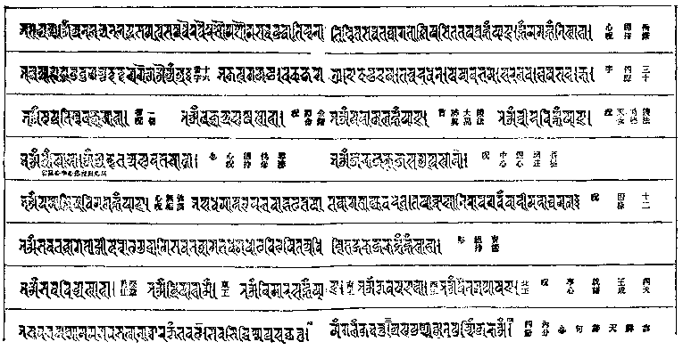

大正新脩大藏經 第21冊
No.1419 佛說造像量度經解 (1卷)
【清 工布查布譯解】
第 1 卷
No. 1419
造像量度經序
烏朱穆秦部落。原任公工布查布。深通五明。精習三倚。心珠內含。慧月外照。憫夫世之造像者。離宗失迷。程式靡準。三會成咎。淪於極惡。致使如來妙勝。末由仰瞻。迺追幀像之初。宏演胎偶之法。繙譯量度經一卷。手加註釋。積歲既成。請正於余。余惟在昔。釋迦如來。為須菩提。說金剛般若波羅蜜經云。若見諸相非相。即見如來。又云。發阿耨多羅三藐三菩提心者。於法不說斷滅相。夫真空冥冥。無我無人。一切有為。如夢幻泡。尋茲元理。蕩蕩難名。斯則神明變化。無可究其形容者矣。然而因現相乘。種種具足。色身融相。如虹斯彰。遍諸大千。普示覺利。剎剎塵塵。蚩蚩蠢蠢。聞香觸光。歡喜無量。自漢以來。至於今日。范金鑄形。摶土成像。俾諸眯曚。同著隻眼。豈非法界之明燈。果海之寶筏哉。若迺宿根明淨。智慧通流。瞻奉慈雲。大啟正覺。循是有相。以窺無相。眼耳鼻舌。如如空虛。人我眾生。等無障礙。所謂以一莖草化丈六身者。偪塞遍滿。隨處湧現。我佛全體。於是乎在。譬如得魚。自然忘筌。顧非是筌。魚何緣得。釋經功德。亦復如是。余樂其有善因也。為之訂魚亥。薙繁重。更付剞劂。流傳四大。庶幾四八莊嚴。隨分圓足。八十妙好。放大光明。以是因緣。齊生忉利云爾。
旹
乾隆十三年歲次戊辰秋七月中元吉日
和碩莊親王愛月居士題并書
造像量度經序
一切諸經所謂佛之身也(顯密眾典所載。二身。三身。四身。五身等。許多分別演說者)其說有二。一曰法身。二曰色身(色。猶相也。其約在有相無相。法身無相。報身住淨土。體同虹蜺。化身住穢土。躬與人同。俱有相)法身者。慧德之報。修習自覺自利之功行。圓滿之極地。色身者。福德之果。能為覺他利他之方便。大權成就之至處。佛為救度眾生。發菩提心。屢劫勤行精進。並修慧福二德。無毫停息。以當得甘露(獲佛果。謂之得甘露)時至果報併結。究竟正覺焉。法身元體。如同虛空。無有著礙。遍一切處。不可分別清淨智慧。色身融相。雖類人天。相好莊嚴。奇特超絕。世無可比。因其一切諸善福德具足故(言五部圓滿報身。及百京最上化身也。其隨類變化身。則無有定矣。雖分而言之謂二。合之可以為不二)眾生若得見其躬。或聞其音。觸其光。至於心所憶念者。具德無量饒益。其善遠被慈愍。未得親覩者。乃有造像之術遺於世間。作為方便第一福田。凡得見聞想觸。但有接緣者。悉能消除身心之災障。而令發二覺之心。引入無漏之境。利益不亞於原身也。其術世稱為量度經傳。流通聖方。及諸番地。自漢明帝初入於中華。迄今千有六百餘年。雖信心瞻禮。頻示形容。而工業倣效。實未盡真跡妙之矣。今有番學大人工某者。生平樂學習之業。懷弘濟之念。寒暑不墆。益久彌懃因見佛像傳塑。規儀未盡。乃特譯出舍利弗造像經。親加註述。弘緘具備。而屬予考訂。予細閱數次。喜自不勝。因規校一切。詳加釐定。題諸經首。以記予隨喜之志云耳。
乾隆七年佛初轉法輪日
佛說造像量度經序
或問。佛有相耶。答。佛有相問。佛無相耶。答。佛無相。問。佛有相之中無相耶。答然。問。佛無相之中有相耶。答然。問。如何是佛有相。答。眾生有相。佛焉無相。問。佛相眾生相。一耶二耶。答。不一不二。問。如何是不一。答。佛以沙劫薰修。百千萬行。相好莊嚴。圓成果海。眾生曠古無明。性天未朗。所行所感。不出六道。故不一也。問。如何是不二。答。佛言。我昔曾為蟲來。未成佛時。何異眾生。今眾生之中。忽然大悟。已有佛性。於生死海中頓超覺岸。前佛後佛。而無間焉。故無二也。問。如何是佛無相。答。佛未出世。相從何生。問。出世後如何。答。鏡華水月。問。鏡華水月是無耶。答。爾問鏡華水月。問。畢竟如何。答。爾問畢竟。問。畢竟無問處。答。無問處亦無。噓。靈山拈華之旨。少林分髓之機。全彰無剩矣。問。如何是佛有相之中無相。答。有不自有。因無而有。無不自無。因有而無。眾生執有以成病。諸佛以無為藥而治之。經云。三心不可得者是也。眾生執無以成病。諸佛以有為藥而治之。經云。於法不說斷滅相者是也。然則有亦能成病。有亦能為藥。無亦能成病。無亦能為藥。有也無也。藥也病也。在當人執與不執而已矣。經云。佛說一切法。為度一切心。我無一切心。何用一切法。是也。我則曰。佛現莊嚴相。為度六道生。六道證真空。莊嚴不可得。經云。即非諸佛。是名諸佛。即非莊嚴。是名莊嚴。即非眾生。是名眾生。是也。問。如何是佛無相之中有相。答。淨法界中。本無色相。大悲示現。四八莊嚴。莊嚴者。非別所有莊嚴。即眾生而莊嚴者也。何也。眾生執貪欲。諸佛化貪欲而為解脫。眾生臥無明。諸佛破無明而為般若。眾生輪生死。諸佛超生死而為涅槃。譬如木中。本有火性。當其未假方便因緣。火何有也。及其方便施工。火從木出。可說無耶。眾生佛性。亦復如是。當其迷時。無明雲暗。智月未彰。三界茫茫。一大夢場。及其悟也。慧風大掃。雲盡無方。性天本潔。智月本光。本潔本光者。不為無明雲暗而無。不為無明雲盡而有也。嗚呼。三世諸佛。即三世眾生。三世眾生。即三世諸佛。不有眾生。安有諸佛。不有諸佛。誰度眾生。然則眾生者。諸佛之苗也。諸佛者。眾生之果也。當知眾生。不可輕也。輕眾生。輕諸佛也。諸佛。不可不學也。不學諸佛。眾生不了也。眾生要了者。當觀諸佛之相好也。諸佛之相。有四八端嚴。八十妙好者。從百千三昧。無量妙行而來也。眾生可有此相耶。可有此好耶。既無此相。又無此好者。定無百千三昧。無量妙行者也。要求諸佛之相好端嚴。當求諸佛之百千三昧。無量妙行。諸佛之百千三昧。無量妙行者。不離眾生。自身自口自意而求也。眾生之身口意。無明為首。便為十惡。智慧為首。番為十善。又以智慧為首。番而為十波羅蜜。十波羅蜜。十地等證。名為等覺。覺既等矣。必等於相。相覺不分。而入於妙。所謂妙覺。妙斯妙矣。妙妙圓明。所謂圓覺。圓覺者。佛果也。佛果者。方有四八端嚴之相。八十二種無上妙好者也。不有如是之相。安有如是之果。不有如是之果。安有如是之相。如是之佛果。如是之佛相。可說有耶。可說無耶。可說無相中有相耶。可說有相中無相耶。雖然。無方便中。假立方便。無佛相中。假立佛相。令諸眾生。觀佛相好。從何而生。經云。佛身者。法身也。從慈悲喜捨而生。眾生即悟曰。慈悲喜捨。人亦能為。不肯為也。譬如周道皇皇。進亦無阻。退亦無阻。進退由人。非由道也。我等眾生。何莫由斯道也。裹慈悲喜捨之糧。駕三十七助之車。御十八不共之驥。進取佛果。而證佛相。寧癡癡蠢蠢。甘忍塵勞。莊飾人天世趣。三惡業道之身相也耶。書曰。見賢思齊。祖曰。彼既丈夫。我亦爾。定光曰。佛昔曾為我。我安不成佛。胡不思之。胡不勉之。予因龍公之命。敬於經首。假立問答。論而序之。以發明人天瞻像之旨焉。
時
乾隆六年佛成道日比丘定光界珠謹題
佛像量度經序
我佛廣大劫來。天上人間。龍宮魔窟。胎卵濕化。鱗甲羽毛。塵塵剎剎。無往不入。故顯示三十二相。八十種好。使情與無情。心明自性。體證金剛。婆婆和和。四十九年。三百餘會。塵說剎說。熾然說。無間歇。又道未曾說著隻字。正所謂佛與眾生。皆具一體。同攝一用者也。佛之相好。始如優填王思佛。命匠塑之。佛對相云。無為真佛。實在我身。脫然會得。佛身即我身。我身即佛身。迄今三千年來。大光明下。普照支那。間有明一善。取一相。不昧正因。而佛之慈悲相好。奚啻四八莊嚴。八十妙好。不過盡眾生之機見。權示導引。依相趨歸。皆至如一善之所取焉。況觀大地眾生。說佛。學佛。語佛。徹見佛頭腦目髓心肝毫髮不爽。能使盡恒河沙眾生著得隻眼。如其人者。爰有大檀生緣。烏朱穆秦部落。自幼承。
聖祖仁皇帝鞠育之恩。以為儀賓。因其通西土之語。世宗憲皇帝特留帝都。以為西番學總理。兼管翻譯之事焉。其為人朴素鯁直。聰敏恭謹。出乎稠人之表。予得會。勅修大藏。乾隆元年同館事。三年來。形骸相忘。脫非世比。亦深知熏習善種。無忘本得。雖處塵塵之中。無他所好。惟耽心梵冊。酷嗜華言。窺顛末。察微芒。盡其平生力。是欲測佛智。於中揀閱佛說造像量度儀經一帙。遠朝市。棲幽壑。窮究歲月。一心不問。考佛出作入息。差無漏明。差無背向。法相短長。毫髮曲盡其妙。其精如佛在世之無異焉。時懷同歸一善之忱。所患朝野邊邦。明佛心依相歸。或金銀銅鐵。香木泥瓦。繪素。種種不一。匠功巧拙。精粗收分。執相之訛。而人心之慢。是以見顏色而啟敬之心。上格佛心。下契愚衷。功豈小補者哉。欲壽梓流通。問序於余。予訝然笑曰。縱具通身手眼。百千三昧。曷敢向佛頭上著色乎。然傅大士云。夜夜抱佛眠。朝朝還共起。起坐鎮相隨。語默同居止。欲識佛性義。祇者語聲是。拈此一段。可表 大檀抱一式。歷萬古不磨之因。守一法。結千秋香飄之果。孰為佛耶。孰不為佛耶。鏡華水月之想。幻化諸實之議。旨哉此也。瞥然一笑。直與三世諸佛。同一鼻孔出氣。三世眾生。同一體靜觀。則像由之所生。心佛亦然。夫復何贅。是為序。
乾隆七年歲在壬戌佛誕日
佛像量度經序
從來修佛果者。六度為先。成佛因者。造像第一。昔如來住世。金相流輝。原有量度。古有造鑛麥大像。且獲福無疆。況志心造像。而不遵量度可乎。漢唐以來。此方國王大臣士庶緇流。造像供養者。不可勝紀。然造者多。而如法者少。皆未得其真尺寸者也。烏朱穆秦部落儀賓公。內通五明。留心佛典。創譯造像量度經。乃舍利弗之所請問。如來親宣者也。其中所說。從頂至足。分寸節度。皆有法則。縱橫大小。毫釐不差。未得流通於此土。今儀賓公。心存菩薩行。利濟形於外。常翻譯諸文。悉皆成章。意欲遺之無窮。又遇靜覺國師。出佛像圖式。及量度經。與其意相合。於是刊布流行。適灌頂大國師。抱恙就浴溫泉。公往問訊。道經荒庵。思在藏館同事接談之情。故出所譯經卷。示成人之美。善必同歸。余因而序之。見其詞清義暢。宛然有古昔房相之風。兼繪像圖式。雅有法度。後之造像者。依式而行。無不感通。福田其有窮乎。法華經云。聚沙為塔。指爪畫佛。皆為成佛正因。況志心造像。而遵量度者哉。自漢至今。世多訛謬相傳。失其法則。公今刊布流通。遵佛量度。若有善信人等。發心造像。依此準繩。造繪聖容。即同世尊在世。親見如來。將金璧交輝之聖像。演六度之精嚴。求得佛果。有何難哉。後之同志者。幸勿忽諸。
乾隆七年佛出家日慈善比丘本誠記
造像量度經引
夫造像之藝。其來尚矣。梵志阿思陀(二合)仙子所作像傳曰。人壽十萬歲時。南洲有轉輪王。名尾亞舍。爾時有儒童夭殤。其父被哀迷亂。負屍號而犇闕。妄犯啟言。梵典頗載。輪王治世。民無非命。今臣息如是。其咎何歸。速還吾子。莫污聖揚。如此纏綿不已。舉朝無法解慰。稍生不寧。即時大梵天帝。為護國王。特遣毘首羯麻天子。授之以圖畫之術。物色儒童真容。而令活之。與其翁。上下俱得歡悅。梵天嘗讚曰。山中妙高最。鳥中惟大鵬。人中如輪王。藝中是丹青。遂流傳於世間。以為像藝之通原焉。惟佛像之本。則我佛中年之時。中天竺國瓶沙王。為遺遠友。乞得世尊畫容。為幀像之始(時工被佛神光射眼。眩目不能注視。乃請世尊令坐河岸。而謹取水中影相為式。描得聖容。因被微波。由作曲彎長絲相。故名謂水絲衣佛。今儞波羅國所出佛像。多有此樣。其摹似乎唐吳道子觀音石像)暮節。舍利弗創受造像量度。而優填王鏤檀造世尊立像。是為如來胎偶之初。於是流佈五天竺之境矣。其於土番。則唐之貞觀中。創興佛法。前後累使東土及天竺。徵聘諸賢。而賚取眾經。一切五明典籍(一聲明。二因明。三醫方明。四工巧明。五內明)繼續翻譯。準令國內公私立剎。各隨其願力學習之。夫三倚之造法。乃工巧明部所收。最為尊勝者也(三倚者。佛像為身倚。佛身之相也。神靈倚。結此寓之。以施人願也。文字為語倚。佛語之相也。妙法倚。凝此存之。以備傳教訓也。塔幢為心倚。佛心之相也。道德倚。因此表之。以示顯義理也。又倚者依也。眾生依此三相而發信。見道明理。又倚此作福田也。梵語伽啼。華云倚。或翻因。謂聖凡相。結之因由也。或翻作蹟。假此蹤跡引誘後人也。亦通。又像為色身倚。文字及塔為法身倚。而廟宇附之。至於法輪鈴杵等物。於一切工用之中。最為尊勝也)彼所出載經傳頗多。而得其傳授者。曼。堇。啾。三氏惟精。西來佛像。什有八九。靡非彼三家所出者(相有大同小異)而天下通稱藏佛(藏翻江。其地有江故名。國中兩大邑聚。一謂前藏。一謂後藏。)賢愚同寶。貴賤共持。豈非分量盡得合式。深有契於人心之故歟。余先在恩師。
勅封弘教三藏廣智法王寶榻前。親受密集曼那羅尺寸時。並得佛像及塔之尺寸。附安藏法要集偈番本。雖未能熟習。亦自知珍惜之。蓋慎藏而弗失者有年矣。今中土之佛像。有所謂漢式者。有所謂梵式者。其所謂漢式者。則漢武北伐匈奴。得休屠金人。安置於甘泉宮。孝明西迎沙門。受幀像。創建洛都寺宇。其後漸盛遍蔓。自晉魏(北朝)六朝以至於宋。代與西國通和。公私往來。時時不斷。故多得西國佛像。而唐之元奘法師。遍歷五竺境。共十有七載。瞻禮世尊過化之地。綜通其聲教。大般若等經千有餘卷。金玉佛像百什餘軀。俱以大象載歸。其像之精妙。皆阿育王等所造者焉。蓋自漢以來。凡欲造佛像者。皆取西來像為模。工行家。祖述相傳。此所謂漢式者也(或以謂唐式)其所謂梵式者。元世祖混一海宇之初。儞波羅國匠人阿尼哥。善為西域梵像。從帝師巴思八來。奉勅修明堂針炙銅像。以工巧稱。而其門人劉正奉。以塑藝馳名天下。因特設梵像提舉司。專董繪畫佛像。及土木刻削之工。故其藝絕於古今。遂稱為梵像。此則所謂梵式者也(儞波羅國。在印土之北。吐番之西。其風俗出巧工。蓋阿尼哥更超群者也。故帝師特引來薦於帝也。巴思八者。華云聖。亦是號而非名也。名洛追建燦。華云慧幢。西番貴族。敏悟非凡。五明俱通。世祖中統元年。封國師。授以玉印。主統天下釋門。後即封法號曰。皇天之下。一人之上。開教。宣文。輔治。大聖。至德。普覺。真知。佑國如意。大寶法主。西天佛子。大元帝師。因叔侄傳繫為吐番國總主。按本傳。世祖初。命取明堂針炙銅像。示之於阿尼哥曰。此安撫王[袖-由+戢]使宋時所進。歲久闕壞。無能修完者。汝能新之乎。對曰。請試之。至元二年新像成。關鬲脈洛皆備。金工歎其天巧。莫不愧服。劉正奉者。姓劉名元。字秉元。薊之寶坻人。其精藝非一。而獨長於塑。又從阿尼哥國公學西天梵相。神思妙合。遂為絕藝。凡兩都名剎。有塑土範金。摶換佛相。皆出元之手。天下無與比。官至昭文館大學士。正奉大夫。祕書監卿)然迄今歷代。竟未譯出其經傳。若有離宗失迷口授尺度久訛不歸者。固無可評正矣。夫貴著貴相。賤露賤貌。裏存外現。分毫不差。昔如來以宿因三十二種大功德圓滿。具足三十二種妙相。而淨息凡夫八十種妄想。因全備八十種隨形好。示應化一切潤嚴者也(八十種妄想者。貪屬妄想四十種。嗔屬三十三。癡屬七種。出祕密集會大教王經疏)此其妙勝莊嚴。豈可以無師之學。謬為增損者哉。蓋具幾分之準量。則凝注幾分之神氣。有神氣之力。以能引彼眾生之愛敬心。因以其愛敬心之輕重之分。而因獲其攝受利益之大小。此乃天理之自然也。經云。量度不準之像。則正神不寓焉。此豈工人之所易任者乎。然則尺寸量度之為要務也明矣。予平素留意於斯。然非用佛說經義。莫能證鑑。故每為之遲遲。適陜西洮州 勅賜禪定寺崇梵靜覺國師喇嘛來朝。晤於公署。偶談及此。訓余曰。舍利弗問造像量度經者最先詳且該。子盍譯而行之。予聞之喜。敬諾焉。於是月餘。而國師贈經之模本。並圖像五篇。俱擇日而程其功。其中復有當資旁搜者。亦各遍攬采取。納於經間空處述之。或別錄類附於後。仰賴佛力。已獲垂成。凡我同好。永遠供為資糧矣。因傚番王佛陀阿布提(二合)所作五明傳略引。而書於經首。時
乾隆七年佛從忉利天下還日(依番九月二十二)
番學總管漠北工布查布謹識
佛說造像量度經解
如是我聞。一時佛在舍衛國。祇樹給孤獨園。與諸菩薩聲聞弟子。一切人天龍神。無量眷屬大眾俱。正乃世尊。因為母說法。將升忉利天土時也。爾時賢者舍利弗。向佛敬禮而作是言。世尊不住斯間。若有善人不勝懷慕。思覩世尊。願造容像者。則其法如何為之。佛言。善哉舍利弗。我今暫升天土。未旋斯間。或示無餘涅槃之後。若有善人。思覩瞻仰。及為自他利益作福田故。願造容像者。則須遵準量度法為之。如來身量。縱廣相稱。如尼拘[口*落](二合)陀樹。滿自一尋。今其體肢大小節分。竪橫制度。起從頂髻。略說於汝。諦聽。善思念之縱廣。猶竪橫也。尼拘[口*落](二合)陀。樹名。梵語也。華云無節。狀如柳。此樹。株身之高分。與其週圍垂梢彼此間深裏向竪橫相等。佛身亦如是。從頂至脚底之縱分。與其平舒兩肱。二中指尖相去間廣分。無不相稱。各滿自己一尋也。
於是世尊即說伽陀日 伽陀。梵語也。華云偈。義詳辭約。為學者易持也。
以自手指量。百有二十指。肉髻崇四指。髮際亦如此 按西來專業像家量度法。微塵。髮梢。蟣。芥子。麥。後復增八倍。一麥分為一小分。二麥並布為一足。四足為指。又謂中分。十二指為搩(音桀。以手度物曰搩。俗謂大扎)亦謂大分。倍搩為肘。四肘為尋。即一庹(俗作托)也。以自手指量者。言現今所造佛像大小幾許。即以自身手指量之。應得自己一尋之分量。即以自搩十搩。以自指百二十指之分也。肉髻。佛頭巔頂上有肉塊。高起如髻。形似積粟覆甌。高四指。由其根下至髮際之分量。亦如此四指也。若胎偶則多得半指。譬如現今欲造立像一丈二尺。則此丈二。即是本像之一尋。而其一寸。即本像之一指分。如是竪橫各得百二十指。乃幀像之比量。是為戒生大教王經中說量度法之義也○分別其節目。則肉髻。髮際。頸喉。各縱四指。共湊成滿一搩也。面輪。及自喉至心窩。由是至肚臍。由是至陰藏。各一搩。是上身之五搩也。牌樞(即胯骨也)膝骨。足踵。各縱四指。共湊一搩。股。脛。各二搩。是下身之五搩。合較滿十搩。十搩即一尋。每搩十二指。十箇十二。即一百二十。此乃比量竪縱之分法也。度橫廣之法。則自心窩而上。比至六指處(胎偶則六指零一足處)從正中橫量至兩腋。各一搩。由是順手至肘以裏。兩臑各長二十指。由是至手腕兩臂各十六指。由是兩中指梢各一搩。共計亦百二十指也○若造坐像。其法陰藏中為正中。即身之半也。其下添四指處。平彈絣線(絣音伻。以繩直物也)而彼與梵絣(幀像之主。心準繩曰梵絣)相接處。即跏趺交會之下隅也。又加四指。為法身之下邊。寶座之上面也。從趺會下隅起。直上立彈絣線。比至眉間白毫中之分量。與其趺坐雙膝外邊相去間闊分。長短平等。而兩踵相離分得四指焉。
面輪竪縱度。帶半十二指。分三為額鼻。及頦俱得一 首面與四體。釋典謂之五輪。帶半。加半指也。言面之長。逕一搩加半指。將此一搩半指。分為兩箇四指。及一箇四指半。三分。而自髮際至山根之眉間白毫中心。額顱之崇作一箇四指分。由是至準頭。鼻之長得其一四指分。由是至頦下邊。得其帶半指之一分。依胎偶而言之也。若幀像。則不加半指。只本分一搩。平分三分。而額。鼻。頦。各均得四指之分也。凡搩分多加半指者。皆是胎偶之比量法。是乃時輪大教王經中說制度之義也。夫胎偶者。有骨肉之相。因以凸高顯露。故皮面須加每搩上半指也。面輪之半指在頷頦。上身之湊成一搩分上。應加之半指在髮際。下身之湊成一搩分上。應加之半指在踵際。其餘心窩。肚臍。陰藏。此三處各間加半指。股。脛。各加滿指(此兩骨節。本來各有二搩。故合而宜加滿指之分也)是縱裏向共總增出五筒滿指分也。自胸中平量至兩腋間之分各加半指。兩肘各得三足零三分足之一。兩手腕各有二足零三分足之二。兩手頭各加半指。如是廣裏向共增出五滿指。合較縱廣俱各得百二十有五指也。至於梵絣。與[巾*亭]木(胎偶之主心木也)之制。則更無有少異矣。密藏倚在脊尖尾骶之前。故數上身。以上六十指。脾樞雖貼於脊骨。而在密藏之上邊。其因結援腿根。為足之生處。故數下身。以下六十指。然而須知其交接法為要(安[巾*亭]木法見裝藏章)○鼻準上。胎偶則添一滿指之分。而去其髮際之半指。鼻柱高一指。亦不在正數之內。幀像之準頭。及頦下。亦各添半指。而不言增添何也。蓋凡繪事筆法。借高鋪地。凹凸增添。雖有幾分增出之筆。仍有被所遮掩之分。因地面平坦故。雖有增添之劃文。而無加益之實跡也。
下分四指半。頦身只二指。廣向十六足。深分逕四指 下分。即前說三分之末分也。言面之縱分。雖分三分。而上分為額。中分為鼻。各得四指之分。其末分為頷頦者。連嘴共有四指加半指也。頦身者。自下唇根至於頦下際也。其縱分只二指。而飽滿光滑。旁曠而邊圓。頦之廣分寬裏向十六足。即四指。若笑容則隨宜增加分量。其自頦際至喉深分亦四指。有沿邊疊摺。似重頦之相焉○凡胎偶之凸凹分。除非頦際及梢尖等處可畫之外。皆幀像之所不得而用也。
上唇長二指。寬有其半矣。中顯頻婆形。邊角各一指。口長度四指。賢者須要知。牙齒數四十。堅密白淨齊。下唇長六足。寬深亦如是。人中凹槽闊。三分指之一 從鼻柱根至閉口處。直量一指半。上唇之長分二指。寬有其半者。言二指之半。即一指也。唇之寬厚分三足。而人中槽下際凹入嘴唇邊一麥之分。其外尖凸出一足之分。似乎頻婆形。與前說之三足合為四足。即一指矣。頻婆。梵語。果名。華云相思果。色丹而潤。蓋不但喻其形。兼唇之色而言之矣。兩邊角各一指。總口之長分有四指也。齒數具正四十(常人但有三十二。三十六齒)堅固齊密。潔淨瑩白。似乎[王*車][王*巨]。然平素不露牙齒也。下唇長指半。寬分。其邊與齒根相去亦如是指半。而其一指即厚之分。上面有凹承上唇之凸尖。下面亦有微凹平且闊。合之形如弓弝。其邊兩彎垂外際。比上唇之寬分各多一麥。二唇脗之而竪裏向直量則只得一滿指。口之兩角寬半麥之分。其梢向上翹起。如華瓣之尖。美妙含笑之容。具為口相也。人中槽闊。三分指之一。而深裏向宜得一足零一麥之多半分矣。
鼻寬二指量。準高指半矣。鼻孔圓且藏。竅闊有半指。雙翹勻真圓。鼻柱橫半指 鼻之寬闊。略量有二指。雙目前角間為山根。高寬俱一指。浸長高而直美。鼻梁作略顯不顯之些微弓彎。準頭圓滿。高分連鼻柱一指半。鼻孔規圓。而睨視之不見竅孔。闊量半指。深分作一指。鼻之兩翹彎回。規圓均美。凸凹真刻。厚分各得一足半。鼻柱及兩孔各寬半指。共合鼻身寬二指一足也。鼻孔之邊與鼻柱相齊。高分有一指焉。
目間曠八足。長分應四指。白黑睛三分。各分得滿指。黑珠作五分。正中是眸子。眼寬只一足。其胞有三指。式如蓮華瓣。清瑩金精色。印堂白毫地。廣帶半一指。眉如初月牙。中高長四指 雙目之間曠空處。闊二指。自白毫而下。比至二指之地。向兩旁橫量各至一指處。為大眼角。胎像則加半指。因為山根之高分也。由是向外比兩旁各去四指處。為小眼角。尖正對耳孔中間。兩角各縱半指。合得一指之分。而餘三指均分。其正中一指作黑珠。在兩邊之二指作白珠。又彼黑珠平分五分。而以其中分為眸子。色甚黑。而發金光如電(眸子邊圍畫金圈以相之)眼之寬分只一足。為入定之相。形似長弓。其弝前面之寬。只一麥半之分。弝後面之寬分。纔滿一足。白珠雖有一指。只見其三足半之分。而近於眼兩角之各得一麥分。則不得見焉。眼胞高一足。闊三指。形如蓮華瓣。白睛珍珠色。黑睛紺青色。分明潤美光滑。眼角肉淡紅色。眼睫亦紺青色。而殊勝如牛王睫。長有一麥之分焉。印堂。安白毫之地也。自髮際以下比三指處。作白玉毫清淨柔軟。右旋彎轉而末向上。底盤圓滿。廣闊一指。由是而下。比三麥半之處起。向兩旁橫量各至足半處。即兩眉前梢也。由是至後梢長四指。後梢對耳尖底一足。形似初二三之月牙。眉之中身寬處。有二麥之分。而兩梢漸細也。
耳廣有二指。尖等眉中齊。洞門寬四足。竅孔得半指。耳朵高四麥。橫分應滿指。耳內上下略。四分指之一。連槽深分總。二指加半指。耳葉四指半。耳垂長五指。輪郭髮際邊。可愛盡難比 耳之前面橫寬平量二指。畫像相同。背面寬指半。其尖齊比眉之中。洞門闊一指。竅孔半指。俱圓而不顯。耳朵。俗謂耳樁。遮攬洞門旁立。豎半指。橫一指。而中有凹。正對小眼角。上凸圓而上凸匾。形如將開未開之華朵。洞門外耳槽橫一指一足。胎偶則連其隰深分得二指。加輪郭之半指。共總二指半也。耳內上下。括而言之也。四分指之一。即一足也。分別而言之。則耳槽邊厚一足。向裏彎緣耳葉而下。至於離底根一指。斜對耳朵處。轉起一凸。高亦一足。形類耳朵。復落彎回而為底根。闇合與耳朵根相連。槽邊上身分作兩岔。厚分各亦一足。其內枝漸細而尖伏入藏於耳輪綱邊之下。外枝稍漸漸散沒。從其岔處。上至耳尖一指半。闊一指一足。耳之輪綱上稍。自槽內與耳朵相隔竅孔。反勾而生起。稍稍增高加寬分以轉上過耳朵之上。彎至耳根上邊以上寬一足而邊陵向裏。彎而下至耳葉外邊之半處以下漸減而細。不斷不沒。至於耳根底相對處以下綏然而為取焉(取之列切耳垂也)總說之。耳葉縱四指半。而直立。耳垂長五指。寬指半。而面向前。復言耳輪與髮際之邊。俱有高底進出曲彎折角美妙可愛。難以言辭可盡詮者也。凡此等處。當竭盡工力。隨宜而致其美妙。乃為合法。
首圍面三倍。如寶蓋適意。兩耳面相去。十有八布指。復其背後間。相去十四指。合較週匝度。三十有六指。頸瓶廣八指。圓二十四指。
頭相規圓。觀之適意。似寶蓋頂。對髮際處圍繞四十五指。普邊增二指為純髮之分。兩邊與耳邊齊。肉髻週十二指。其上無見髻相。寶髻高二指。週六指。桃形。金色。對兩耳洞門處。橫比之。逕十八指。畫像則十二指。耳背根彼此相去十四指。共計三十二指。而兩耳根盤各一指。鼻之高分得二指。共三十六指也。凡物之規圓者。其正中之橫逕分幾許。則其週圍之量。必得若許三分。佛面縱橫逕十二指。因對面之正中處。週圍應準三十六指也。故啟句曰首圍面三倍也。脖項規圓如瓶頸。廣度八指。巨週二十四指。喉下有三級紋。自頷根以下。比一足半處作上紋。由是以下。一指零一足處作中紋。由是以下。二指處作下紋。俱圓彎而兩梢漸細向上。合項之橫以為長分焉。
頸邊至肩甲。平量十二指。手長總四搩。臑長二十指。臂有十六指。巨週亦如此。肩尖圓且滿。根圍二十四。從起中指尖。手頭正一搩。掌縱應七指。廣分是五指。掌肉平飽滿。滋潤光滑赤。顯諸吉祥紋。螺輪華鉤飾。將指之長分。前面得五指。此指梢節中。食指之尖至。屈指之長分。比將矮半指。小梅指頭尖。至屈末半節。四皆具三節。甲蓋半節矣。巨指長四指。其週亦如是。此指只兩節。甲遮如前矣。巨指食指根。相去為三指。小指根以下。四指半至基。
自頸喉之根外邊。橫比至肩頂。十二指零二足。而若自頸之正中。向兩旁橫量。則各十六指。肩頂凸處。圓美滿盈。闊四指。從肩頂以下。直至兩腋。各六指。從腋斜至肩膀邊九指。自肩至肘謂之臑。臑之長分。及其根之巨週。俱二十指。徑寬分得其三分之一。若垂手勢。則兩肩橫制邊。各加四指。自肘至腕曰臂。臂之長分。及其根之週量。皆十六指。寬得其三分之一。手頭。自中指尖至手腕也。長一搩。手肘三足零三分足之一。手腕二足零三分足之二(此兩分。畫像之所不用也)手掌縱七指。廣五指。平坦充滿。光滑色如丹砂。掌中心有千輻輪相。而其外圍繞。具右旋螺貝。吉祥字。蓮華。慈鉤。慧劍。等諸般福德相。紋細密深且真刻。普遍散列為嚴飾。將指。中指也。其指在掌面之長分五指。此指者。即指將指而言之也。食指。二拇指也。其長。至中指末節之半。屈指。無名指也。其長分。比將指矮半指。此三指之生根大概相齊。而中指根節微乎高。小指根。比中指根矮半指。而其梢。與屈指末節縫過一足。以上三指。各具三節。而自掌面觀之。節節長分一般。自背面。則將指上節長二指。中節長二指半。下節三指。手背一節長四指半。餘三指亦如是推度。而隨宜分為四節。指根巨週得其長制三分之二。指梢巨週得三分之一。巨指者。大拇指也。長週俱四指。只有兩節。其根比食指根矮三指。而自其根至手腕五指。手腕巨週十二指。寬四指。從掌基裏邊。至將指根。縱分七指。廣分。極寬處亦然。對生指處寬五指。掌基寬六指。諸指末節上半被爪甲蓋之。甲形如[瓦*甬]瓦。色如紅銅而明亮。其梢邊離肉分一麥。而色亮白如瑠璃無垢也。巨指下節與食指根。及餘三指下節。俱以薄皮相連。如鵝王掌。表裏明瑩。并展不歉。指底面色與掌色同。指肚飽滿光滑。字紋從中起。自左向右旋繞。指甲根邊沿皮寬半麥之分。總言手長四搩。不露骨節。而柔和如意。屈伸悠然。猶如象鼻之彎轉焉。
項心臍乳間。帶半十二指。自乳尖至腋。平量六指矣。兩腋相去度。二十有五指。胸堂週圍繞。正五十六指。自從雙乳絣。十六指至臍。臍圓有摺旋。深闊皆一指。此處腰圍繞。四十有八指 自咽喉至心窩。由是至肚臍。各間俱一搩零半指。畫像不加半指。乳尖闊二足。高滿足。其圓光寬一足。週三指。醬色。由是至兩腋各有六指。兩腋相去間。前胸後背各二十五指。腋下脇肋厚分各八指。對此處週圍六十六指。兩乳相去間一搩(胎偶加半指。畫像不用加處如前。後皆倣此)此處身之前後。各橫闊二十二指半。兩肋厚各滿搩。共計週圍六十九指。自乳尖以下二指處。身前後闊各二十指。肋厚各十指。共六十指。臍上比一指地。乃腰之極細處也。橫闊十五指。巨週四十五指。自乳至臍十六指。兩乳至兩肩各一搩。臍之闊深皆一指。其孔圓自左右旋向內之摺。而不顯露。對此處身前後寬十六指。圍繞四十八指焉。
髀樞邊向裏。平量二十四指。從臍至陰藏。滿搩加半指。陰藏如馬王。密囊有四指 髀樞(胯骨)之上際。與臍分之橫線下離四指。而下結連腿根兩胯。彼此兩外邊相去闊二十四指。週圍五十四指。自臍至陰藏一搩。對此處之闊二十五指。胯間為三角形。正中縱量八指。每角各方十指。其前角即按密藏處。後兩角即為兩臀尖處也。陽莖縱四指。其頂二指。週六指。向內縮藏不露。同馬王陰相。密囊縱垂五指。闊四指。而亦不令顯露。髀骰下邊之制與胯下齊。臂尖圓之處。縱廣俱八指。高分應三指焉。
股奘三十二。長二十五指。近膝圍繞度。二十有八指。連節膝四指。踝骨縱三指。鹿腨纖圓直。長二十五指。中間週圍繞。二十有一指。踝圍十四指。其邊寬二指。以下四指踵。凸闊得三指。足底竪一搩。厚分有二指。四指俱三節。甲遮末半矣。將指惟二節。圍繞五指是。長度滿三指。食指亦如是。十六次八分。中屈及小指。大指厚六足。餘漸止滿指。指根連縵網。趺高如龜背。掌平滿柔軟。滋潤色丹赤。輪螺吉祥字。諸妙相深微。如是如來相。一切福德備 兩股之當中奘分。巨週三十二指。闊分得其三分之一。根之闊一搩。週三搩。長裏向二十五指。即二搩。依胎偶而言之也。近膝處圍繞二十八指。膝蓋骨竪四指。闊九指。巨週應得二十七指。而凸阜上均得一指。故作二十八指也。腨腓腸也。直且纖圓。如鹿王腨。其長分同股之量。當中巨週二十一指。腓梢巨週十四指。踝骨縱廣俱有三指。而不露。自踝後邊橫比之。攬筋寬二指。足踵縱分四指。其凸尖闊三指。盈滿規圓。足底長一搩。將(足以大拇指為將指)食二指。肚面長二指。共一搩二指。生指根處寬六指。脚心中寬五指。踵底寬四指。趺高飽滿似龜背。其生根。比踵之生根高半指。足底裏邊厚二指。向外漸薄。而至外邊厚分只一指。將指旁邊。及背面皆長三指。巨週五指。厚六足。食持長分與將指同。而厚分微淺。餘三指亦隨脚底漸次薄。而至於小指厚分只一滿指為止。其各長分。則以食指平分為十六分。以此十五分量中指。以中指分為八分。以此七分量屈指。以屈指分為八分。以此七分量小指。巨週俱各以其長分比量。此四指。從底面觀之似兩節。而實三節。爪甲蓋其末節之半。色形及縵網俱同手指。足掌平滿柔軟。滋潤而色如丹砂。中心有輪相。其圍螺貝吉祥字等諸般妙紋具全。與手掌相同。收尾總結之曰。如是如來殊特妙相。皆悉如來宿因屢劫。積功修行力。以自然感獲一切福德。莊嚴全備。非但如世間紅福果報。人天尊貴容貌。所得比喻者也○經文大旨。依義詮解。準法具明。至於週身骨節脈絡。隱伏藏密。為粗為細。凸凹曲彎。增減各處。漸起稍落。不害均勻等。筆舌所難詮述者。則賴良師信徒之相得。授受之明爽。聰慧變通之功力也○右像法。乃是三世尊佛。彌陀。藥師。七如來。八十八佛。賢劫千佛等。凡離塵修行相者(亦謂之化身相)一概以此為準式。若夫無量壽。及嚧舍那。毘嚧等五部如來。一切受用五欲祕密相者(亦謂之報身相)則寶髻作五股金剛杵之上半節。其崇高之分。及巨週分量。俱同前說寶髻之分量。髮攢高十指。肉髻含於其中。而其根巨週十二指。肉髻上邊處週十指。頂週八指。此兩節俱被金帶緊圍。餘髮編作四繩。從兩肩下垂。而其梢略過手肘。其餘尺寸形相。一一同前也○衣服莊嚴。則三尊等化身佛相。皆宜著上下法衣。五衣著下身。七衣著上身。五部等報身佛相。以八件寶飾為莊嚴。何者為八件。一寶冠。即五佛冠也。二耳環。三項圈。四大瓔珞。五手釧。及手鐲。六脚鐲。七珍珠絡腋。八寶帶也。謂之大飾。耳垂上前臨優波羅華。冠左右下垂寶帶脚鐲上圍繞碎鈴戒指等。謂之小飾。隨宜妙繒。雲肩飄繙為上衣。雜色長短重裙為下裳○論座位則有備便之別。備者義制全備也。有通別二者之分。通者。即獅子寶座。諸佛及經函塔幢所通用也。別者。謂祕密五部主佛。各有宜用分別。如來部主毘盧佛。坐獅子王座。金剛部主阿閦佛。象王座。寶部主寶生佛。馬王座。蓮華部主彌陀佛。孔雀王座。羯磨部主不空佛。鵬鳥王座。若他佛及諸佛母。但知其所屬何部。則隨其部主而用之。詳其義制。則獅子喻無畏之相。象大力相。馬神足相。雀自在相。鵬無礙相。背光制。有云六拏具者。一曰伽噌拏。華云大鵬。乃慈悲之相也(鵬鳥與慈悲。梵名相近。故借其音而因以有形。表示無形之義。餘皆倣此)二曰布囉拏。華云鯨魚。保護之相也。三曰那囉拏。華云龍子。救度之相也。四曰婆囉拏。華云童男。福資之相也。五曰舍囉拏。華云獸王。自在之相也。六曰救囉拏。華云象王。善師之相也。是六件之尾語。俱是拏字。故曰六拏具。又以合為六度之義。其尺寸色飾。則西番書有上中下之分。且漢地舊有其式。故不具錄。所云便者。則隨便取用之辭。如蓮華座。月輪墊。是也(怒相用日輪)形規圓。或隨照跏趺之式亦可。座厚分十指。墊厚二指也。
佛說此經已。賢者舍利弗。及諸弟子。一切大眾。聞佛所說。皆大歡喜。信受奉行。
佛說造像量度經
右經梵名。舍思多(二合)羅(一)尼拘[口*落](二合)陀波哩曼那羅(二)佛陀波羅(二合)底麻(三)羅乞善(二合)那(引)麻(四)譯曰。舍思多(二合)羅。開示(謂經也)尼拘[口*落](二合)陀波哩曼那羅。縱廣平等。如無節樹。佛陀波羅(二合)底麻。佛像羅乞善(二合)那(引)麻相制名謂。順其辭而合貫之曰。開示佛像。縱廣平等。如無節樹。相制名謂經。今掇其義而約名之云。佛說造像量度經。按此經凡有三譯。一疏。而是本乃西天三藏達磨多囉。與亞哩弄(地名)譯師查巴建參同。在恭唐邑翻成者也。愚雖不肖。承諸善智師慈力。對勘諸經。以彼準此。修正其訛。填補其缺。但以辭達為務。至於纂述文義。以及附載同類編章。則悉遵時輪戒生二經。以為考正云爾。
造像量度經續補
一菩薩像
八大適子等。已成正覺。而由其往昔願力。感化應身菩薩相者。彼像造法。南面正坐。與佛像無異。若夫陟位歷地之菩薩(位大乘五位也一資糧位。二加行位。三通達位亦名見道位四修習位。五究竟位也。地。即十地)宜置旁列。與侍奉至尊諸像相類其制身之縱廣。約等十搩。每搩十二指。共為百二十指。而為胎偶之增法。除非鼻準及頦下(各加半指)之外。可宜不加增處。不必加增。其必得加分處隨宜加分。各致其曲。而俱不可令彀半指(像傳有附載云。凡夫身量。竪八十四指。橫九十六指為止。縱廣不等。因其二萬一千六百業息故蓋一晝夜之吸呼二萬一千六百息也內分十二節蓋隨十二時也每節分得息千八百。菩薩自發心進步行道時。業息漸滅。而隨其滅幾數。以慧息遂長幾數。如是方得初地第三位歡喜地通達位則業息滅盡一節千八百而慧息長滿一節千八百以是形於外相。得縱廣相等百八指。如是漸進。踐至第九善慧地。每地兩息減增各一節。而形相各增二指。方至於第十法雲地境。即如前減增一節。此共滿十節。而形相指分共得百二十有四指。越盡十地而至究竟位極處。兩息餘末二節。一減一長皆盡滿。而即得圓滿報身。則外相增一指。共算足滿百有二十五指之句。然而正傳中。則總略之如前。今亦從之)髮攢高八指。頂尖寶嚴二指。面形似鳥卵。具喜悅慈愛之容。目長三指。寬分一指。如蓮華瓣。取長四指。兩脾樞外邊相去十九指。天男相無髭(如將足十六歲童相)服飾同報身佛像。而輕健。以華鬘為絡腋焉。
(附)佛之受用身。為淨居天主。變化身。作穢土人師。菩薩之受生。亦莫不托於色欲兩界。天人二種(若隨類變化之應身不與)故論相者。一面二臂為本元。而祕密部所出。多面廣臂諸異相。或借外相示內義(如怖畏明王相。其九面為示大乘九部契經義等類)或為調伏諸異怪。故現非常相(如囉叉鬼王。因具十頭以自慢。時觀音大士。特變十一面喜怒并具之異相。而折絀彼傲氣等類是也。手足義亦然)亦可以類推也(時輪盛樂金剛使畏大悲觀音等。多面廣臂之數分法。諸家傳授互有所異。然其義理不忒。明其一。則餘者可推度而易知也)今單出一相。以為總軌之元式。如十一面千臂觀世音(功德尼式。番王式等。有番漢數樣。今擇一合本足證者述之)身量同佛立像。而臍密間添四指。通身白色。元正面縱分同佛面。廣十指。慈相。其右廂面藍色。左廂面紅色。此二面縱分同正面。而廣分只得其半。外添鼻準高分一指(畫像之謂也。若胎偶則橫分只作八指。凸且扁。此三面謂之法身三面)第二層正面竪橫同作八指。色黃白。悲相。髮際三指(兩眉微顰而無笑容)其右面正黃色。左面赤黃色。此二旁面縱分同正面。而廣只得其半。外邊添鼻分六麥分(胎偶則廣分六指。此三面謂之增長三面)第三層正面七指。色赤白。喜相(具微笑容)髮際同前而其右面綠色。左面紫色。此二面縱分同正面。而廣分只得其半外添鼻分五麥(胎偶則廣分作五指。此謂之報身三面以上三層。右三面皆作顰眉直視微怒相。左三面皆喜悅相)第四層單面。大怒明王相。竪橫平六指。青色。髮之崇分亦然(髮稍旋凝如獅子鬃鬣)頂上彌陀佛頭化身面相(紅色。或作金色)頸一指。面輪五指。髮際指半。肉髻一指。寶髻半指。每面分均分十二少分。依常制之各指。推捫比較。以度定各面之眉。目。鼻。口。及準頭等。直曲寬狹。除彌陀面外。餘十面皆俱三目(本教經曰目數千。又三十二)正面之兩耳。貼在旁面之腮上(以上為畫像之準也。胎偶則第二層三層正面之兩耳。俱各向前移一分。即前說元正面之廣分。胎偶作十指同義)知此一像。則一切具多面像者。可以依是推度矣。其廣臂之布設法。自心窩而上比至六指處(胎偶則六指零半指處)從正中橫量各一搩。至兩腋竪繩。即作點記(上比肩頂三指。下比腋肢三指)再從兩邊之記號起。向外各去正五十指之地。畫圓圈作環記。所作諸手。雖伸亦不得出此環記之外。手足雖多。根同生於一樞。其式約略似扇把橫軸所攔。適手舉者。餘手從上向下排。適手垂者(裏收者同)餘手自下往上排(此式以經為徵。且天竺國齎來像軀。多見如是。今漢番同俗。不管適手之舉垂。但是餘手。盡作由上向下者非是)千手者。法身八手。報身四十手。化身九百五十二手。共計滿千手也。即從前說環記起。向裏次第各驀四指。復畫五層圓圈。於是從前說兩旁點記起。向外至於內圈。直拉絣線勻分六分(除却身質所佔之分。兩邊各作三分。合算六分)第二層上兩邊各分作十二分。第三層各分十四分。第四層各分十六分。第五層各分作十八分。第六層(即前說外邊總括環圓記也)兩邊各分作二十分。而以為底盤境框。復次始作法身八臂。二適手當心合掌(兩掌不宜緊貼。中作虛之)餘右第二手持白水晶念珠。左第二手執白蓮華。右第三手執金輪。第四手作施願印。左第三手執弓箭。第四手持軍持(舊翻澡瓶。因其用而名之也。又有譯作胡瓶者。對華言之也。今合其名實而直翻之曰頂沃。其納口在腹。吐嘴在頂。頸長嘴小)除二適手。餘六臂。俱排開。而畫像不出內圈之外。胎偶亦依此推度之(內圈六分。即為此六也。手頭須排均勻安置。其持數珠蓮華之手。則對兩肩外邊。手頭向裏覆。而以指捻持之。執輪及弓箭手頭略舉之。餘二手頭略垂之)報身四十臂。從上向下排。右翼二十手。挨著次第。一擎執佛像(釋迦佛之像)二如意寶珠。三日精珠。四青優波羅華。五錫杖。六白色金剛杵。七利劍。八鐵鉤。九白拂。左翼二十手。亦挨著次第。一寶殿。二寶篋。三月精珠。四紅蓮華。五鉢盂。六金剛鈴。七傍牌。八羂索。九楊柳枝。其左右第十兩手。合拱前面作等融印(對拱臍下四指處。右仰左俯。兩掌合。而以兩巨指相把之)復從右第十一手。挨次排下。十一賢瓶(腹大而圓。頸之長分有其腹竪向三分之二。口向外捲)十二寶山。十三髑髏杖。(髑髏在杖上頭)十四梵夾。十五鉞鈇。十六金剛鐵椎。十七作施無畏印。十八玉印。十九長槍。二十交杵。復從左第十一手。挨次排下。十一寶鏡。十二玉環。十三右旋白螺(身質右旋。其衽則反迴左轉。按螺蟲骨身。通是左旋。而衽迴右轉。今番僧寺廟。為樂器用者即是。謂之凡螺。亦謂逆轉螺。不為貴。傳云。螺身輒轉生螺。連轉五次者。即變右旋螺。謂之仙螺。亦謂順運螺。在處大有吉祥。世間甚為罕有)十四五彩疊雲。十五蓮華心蘂。十六鐵金剛橛。十七禾穗。十八蒲萄。十九鋼叉。二十黃蓮華。此四十手。不出內頭一層圈外(兩翼各二十手。根同一樞。歷歷均勻展如扇把。其像如千臂俱全者。此二十手俱由上至下。只排一行。若不作化身諸手。則起第十一手。復始排作一行。而後層諸手。次第安排。互現前層諸手隙間)次作化身手九百五十二臂。照前所畫第二圈。兩邊直繩各有十二分。每分分作六分。除兩邊極下各一分不用外。其餘每分作一手。共得百有四十二手。復次第三圈。兩邊直繩各有十四分。每分分作六分。除兩邊極下各一分不用外。其餘每分作一手。共得百有六十六手。復次第四圈。兩邊各有十六分。如前分除之。共得一百九十手。又次第五圈。兩邊各有十八分。同前分除。共得二百一十四手。復次第六圈。兩邊各二十分。如前每分分作六分。而每分各作一手。則共得二百有四十手。合前諸手。是得滿千手也。此九百五十二手。悉作施願印(手掌側仰之而少垂)掌中眼目。參差互見。一一分明(千手掌中。皆有一目)諸臂相皆極柔順圓好。如正開之蓮華。各不侵礙。數雖千名。而觀者自不覺其多矣。法身八手。形如常制。報身四十手微細於法身(諸手長分相同。其寬奘分。則此四十手。比前八手奘二十分之去一分。以是遞推。凡後層列手奘分。俱照前層諸手二十分之除去一分。只作十九分便得矣)胎偶者。其四十八手。但可收之無礙者。向前隨宜收之。則後層諸手得[髟/公]爽矣。故或舉。或垂。或伸。或屈。左右對偶。意自相應。蓋亦觀其執物之勢。隨宜布置。不必盡以邊圈為度。惟從前往背面。層層次第。離空皆令均勻。則不礙於背光(單作法身八手者甚多。四十八手者已屬罕見。滿作千手者更少矣。蓋因不得其法。難作之故耳。本經雖有持明人依像修習時。不要務必待千臂全修之語。然而解義云。謂其千手乃為賢劫千位輪王。千眼即賢劫千佛焉。則面臂全具之功德自然大也)凡一切廣臂相。俱以此為元式其有多足者。則自兩元足外邊。起兩股根樞畫餘足邊際。漸廣之以至於足指尖。其足趺與諸指。但得分明現見。即是八件寶飾。及衣服等。俱同報身佛像(三層面寶冠。下層者不宜遮過上面嘴脣以上)而以仁獸皮為絡腋(舊作黑鹿皮。未詳其義。按仁獸。梵云吉哩二合斯那二合薩[口*辣]。華翻黑脊。蓋因其毛皮而稱之耳。常見西番國歲貢物件。有此獸皮。形似山羊而小。毛短薄。色多微黃。脊毛純黑色。天性最慈。為人忘己。據使者言。捕時不事獵圍。惟二人執兵。尋其棲處。既望見。詐為相鬪狀。喊聲對罵。且作揮兵相擊勢。此獸見之。以為相害。遂欲解救。犇至隔立二人之間。至死不去。遂得而刺焉。本朝官譯名謂之仁獸。其披法。則毛向外。頭前尾後。斜披左肩上。以頭皮遮著左乳。而將右邊後腿皮。從像之背後由右腋下。挽過至像之前。與右前腿皮。互相交盤縛之。此一件服飾。諸經典未見他像所用。惟獨觀音及慈氏菩薩像有之)兩足平立。兩胯外邊相去廣量作二十四指。
二九搩度
佛之畫像。及菩薩像量度。謂之十搩度。此九搩度者。自初地菩薩以下。總攝二種聖像之常制也(世間聖及出世聖)縱廣相等各九搩。每搩十二指。合滿百有八指。其分法。則面輪。自喉至心窩。由是至肚臍。至陰藏。各一搩。股與腨各二搩。共為八搩(九十六指)。髮際頸喉各三指。(共六指)膝蓋足趺各三指(共六指)合十二指。為一搩。通計九搩。此乃縱分之九搩百八指也。廣分起心間。平至兩腋左右各十指。兩手臑各十八指(共五十六指)兩臂各十四指(共二十八指)手頭各十二指(共二十四指)合共得百有八指。斯即廣分之度。而以搩分得九搩也。以右制為格局。而諸賢聖又各稍有差別。謹列於左。
獨覺像(如十二辟支佛等)頭頂上微現肉髻。面目作於佛同。體肢之闊量周度。皆推模取準於前篇(後皆放此)。
羅漢像(十八大聖徒。十六阿羅漢等)頂無肉髻。相貌或老或少。或善或惡。以及豐孤俊醜。雅俗怪異。胖瘦高矮。動靜喜怒諸形。色。赤黃白黑俱可。目正鼻端。最忌根肢缺傷。然亦隨其耦對。參差得宜為妙。此與前獨覺像并著僧衣者也。
佛母像。五行之真性。為五部佛母(亦謂明妃)或有佛菩薩被大慈力。以就世間之通情(眾生通情。惟母恩重且周)特化女相者。或善信女人女神發弘誓。行大乘願滿成道者。俱通稱佛母(經傳雖有天女仙女之呼。然皆隨其當時所現之裝。有大小分之宜。其為像之尺寸。則更無有分別。予曾見一種尺寸書。有百二十五指。及百二十指等之分。猝見似乎有理。深詳之間有謬乖之論。且不得其梵本。未知何人集纂。難以考信。故闕之)其像作十六歲童女相。乳瓶廣八指。周三倍。胎偶則凸高分四指。堅實不傾(精氣足而不搖之相。因無欲故也)乳尖珠高闊各一指。雙瓶中間橫二指。髮作半攢。崇六指。向後傾之。餘髮下垂。而梢過手肘。面形如芝蔴(或作卵形)目縱三指。廣半指。似優波羅華瓣形。臂梢。脛梢。指尖。腰之極細處。俱比他像稍細。而肩頂亦作低二指。下身之廣闊分。比本制諸像。稍加寬厚。衣服莊嚴同菩薩像。而總用正大窈窕之相方可。
三八搩度
戒教王經云。一切威怒像。通作八搩度。謂忿怒明王。及惡相護法神。乃以慈力。為降服世間純陰毒種。特變猛烈之相者也。上品謂之明王(如十大明王)列於眾者即為護法(如大黑神等)內中雖亦少有分別。然格局則同作八搩。豎橫平等九十六指也。其分法。面輪頸。至心。至臍。至陰藏。各滿一搩(共四搩)股脛各十八指。合三十六指。共為三搩髮際膝蓋。足趺。各四指。合為一搩。通計八搩。是為縱分(指分得九十六)廣分從心間至兩腋左右各十指。兩手臑各十四指。兩臂及兩手頭各十二指。合共得九十六指。斯即廣分之度。而以搩分得八搩也。底座高一搩(蓮華十指。日輪二指。日月層疊者。各得一滿指。若有生靈。則其臥身區分作八指。而日輪作一指。華作三指。隨宜加減。而俱不出一搩也)蹲立而足尖向外。右踡左展(亦有反此者)二踵直對間空三搩(有齊踡蹲踞者。惟留四指)須得蓄威蘊怒。山臨岳發之勢方妙(奪怒相具九勢。身語意三門。各具其三。僊僊軒舉狀仡仡莊勇貌桓桓威武貌身之三也。大笑。叱吒。可畏。語之三也。慈悲。浩然。寂然。心之三也)面形男方女圓。三目大睜。紅且圓。顰蹙兩眉。頭髮竪立高一搩。上安頂嚴部主佛高四指。髮眉髭鬍皆赤黃色。熾然作火焰之狀。張口呲牙。而卷舌。五髑髏為冠。冠高六指。橫四指(髑髏身高亦四指。其上寶嚴二指也)瓔珞莊嚴天衣同菩薩像。而虎皮為裙。蛇為絡腋(間有宜乎別扮者。亦看其神之等差耳)背靠作烈火焰。此格內亦有二種。一微露和悅容(明王多用斯相)目長二指。寬指半。上下牙齒間空亦指半。通身不露骨筋脈絡。腹垂遮股節。約三分之二(謂之夜剎怒相)二甚怒大惡相(護法多用斯相)眼目縱廣平等二指。上下牙齒相去亦二指。鼻孔反豁。手足筋悉皆暴露。指甲尖似虎爪(謂之羅剎怒相)別有無上教經所載。中圍輪王佛像(時輪。喜金剛。上樂明王等)亦可為奮怒相屬(謂之仙人怒相)然而中土自來未經流傳。故不更述(大略起於髮攢。一切體肢量度。悉同佛報身相。而雙眉微顰。三目長三指。寬十麥分。張口上下牙齒相去只得二麥分。髑髏為冠。而以五十新頭為絡腋鬘。女相則隨髑髏為鬘象皮為衣有用人皮者。骨鏤五印。骨珠瓔珞以為莊嚴此間所說衣鬘以嚴乃無上教一切明王護法怒相之通用者也)。
四護法像
一切護法神。總歸於男女二宗。男宗以大黑神為首。女宗以福女天為首(亦名功德天女。此乃據無上教而言也。若依通教。則屬於主守國土神一天下有八大守土神)印土西番番僧諸剎。莫不以斯二尊為先。其造像之尺寸。則既明於前章矣(前說護法大怒相者。即此類也。二位並青色。黑神右手執鉤刀。左手摯顱器。福女右手揮劍。左手同上。亦有黑神作官扮者)其餘則西域約稱曰道八十八神(八大天。八大龍。八大曜。二十八宿。四大天王。九大怖畏。十五鎮方天。八大守土神)東土通尊護法二十諸天。其內雖有互見(如世間三尊及帝釋。已入八大天中。復入鎮方神之類)然亦因現各異。不得認為重複也(神通妙用。分而百千。合而為一。統攝既殊。因見自別。未可執一而論也)今取像傳所載數尊。并遵中土風俗。參考而述之。以便於後世興福家云(內中大底中土罕見者。各位名下。俱註其相)○其應入九搩格局者。大梵天(鎮上方神)大自在天(鎮東北方)那囉延天(亦算鎮方神。青色微怒相顰目睜目而不張口也善扮右手擎執金輪。左手觸胯執寶杖。以上謂之世間三尊)欲自在天(即魔王天。賢劫千佛之弟。琢磨千兄速成道者。紅色善相。左手執弓。右手執箭作武扮)帝釋天主(鎮東方神。以上乃八天中五位也)多聞天王。持國天王。辯才天女。功得天女。韋駝天童。堅固地神。菩提樹神。鬼子母天。摩利支天。日宮天子。月宮天女。水天(鎮西方神。白色善相。兩手持蛇索)娑竭囉龍王。風天(鎮西北方神。綠色善相。手執風旗)○其應入八搩格局者。增長天王。廣目天王。金剛密迹。散脂大將。火天(鎮東南方神。紅色善相。頭髮連鬢。鬍鬚俱赤黃具寶冠耳環手釧。著縵衣。右手持念珠。左手持澡瓶)閻摩囉王。囉剎鬼王(鎮西南方神。青色惡相。右手執利刀。左手持賊人首級)阿脩囉王(亦算鎮方神。黑綠色。武扮。右手執利劍。左手執圓盾)持瞢財王(鎮北方神。黃色善相。武扮。而載寶冠。右手執寶杖。左手持財囊活鼠狼口吐珍寶者)金翅鳥王(人面。鳥嘴。牛角。腰以上人身。以下鳥體。頭面青色。脖頸至胸紅色。而兩手合掌於胸前。肚腹白色。腰以下黃色。翅尾綠藍交雜。兩角間嚴以侔尼寶珠。及具耳環項圈。瓔珞臂釧。雙翅展而欲舉之狀)六。搩制吉祥王菩薩(即邪引天也。乃八大天之一。又算鎮方神數又為八大守土神之一。白色善相。象頭而左牙拆。右手執鉞。左手拏帶葉蘿蔔。身量尺寸見於下)以此三十六尊。可為兼舉一切護法總要。而八部鬼神無一不被總統也(八部鬼神者。一天。二龍。三夜剎。四香陰。五非天。六大鵬。七疑神。八腹行。復有言八部鬼眾者。一香陰。二噉精。三甄卵。四餓鬼。五諸龍。六臭鬼。七夜剎。八囉剎。此乃世間鬼神之總略也)六搩制者。竪橫平等。以六搩為度。一名侏儒量。即諸矮身像度也。今惟錄吉祥王菩薩一尊。竪橫各六搩。指分得七十二。其分法。則面輪一搩(象鼻不在分內)以下至心窩。肚臍。陰藏。各十指。而以搩分得二搩有半。足之股脛各一搩。膝蓋。足踵。各三指。湊成半搩。通計共為六搩。指分七十二指。此縱分之量度也。廣分胸膛橫一搩。兩手頭各一搩。兩臂各十指。兩臑各八指。合成三搩。通計亦是六搩七十二指。而為廣分之量度也(凡此格局分法。諸家互有不同。且多訛傳。今細加校勘。悉正其誤)。
五威儀式(兼載須知補遺)
威儀。言手印。幖幟。坐住勢。及一切莊嚴也。東方金剛部主不動如來。藍色。手印於圖樣中釋迦佛手印同。謂之降魔印。幖幟則五股金剛杵。竪置左掌上。而大拇無名二指捻持之。南方寶部主寶生如來。黃色。手印右手作於圖樣中救度母右手同。謂之施願印。左手如前正定印(即如釋迦左手)幖幟麻尼珠置左掌上。西方蓮華部主彌陀如來。紅色。手印同圖樣中無量壽佛。謂之禪定印。亦謂等持印。幖幟紅蓮華。北方羯磨部主不空如來。綠色。手印左手如前正定。右手胸前。或乳傍。手掌向外略揚之。謂之施無畏印。幖幟五色交杵。捻執左掌上(五色交杵。上五峰紅。下五峯白。左五峯綠。右五峯黃。中心藍色)中央如來部主毘嚧如來。白色。手印二拳收胸前。左拳入右拳內把之。而二巨指並竪。二食指尖相依。謂之最上菩提印。具幖幟者。則二手等持如無量壽佛。去其寶瓶而安金輪是也。此五佛頂嚴。各作五股金剛。以具五部之義。或作麻尼珠頂嚴亦得(須知不可執泥)以上五印。略為諸佛手印之總綱(如造多佛像。而不知其手印者。內分五數為一[番*去]通用此五印。是古來傳授。若有餘零。則以下說別印補之)其有以左手作拳。巨指尖平入右拳內握之。起立當心。謂之毘盧大智印。不空佛施無畏印如前。而大拇無名二指相捻(大藏祕要。誤作大小二指)餘三指竪如旛相。乳傍手頭向外覆之。謂拔濟眾生印。又釋迦佛大乘法輪印。同圖樣中文殊菩薩手印(除去兩邊之華今釋迦佛以此手印造者。人多誤識為彌勒佛因其手印相同故也)又右手胸前揚掌。而巨食二指相捻。作畫策指示之狀。謂之說法印。右手作施無畏同前。而左拳執袈裟角。傾垂作如鹿耳於當心。謂之授記印。又期剋印者(一名禁伏印。怒相多用)中指無名指並屈。以巨指掩之。食指微竪。小指作鉤。此等甚多。詳載大藏密要(維揚福國寺僧元度所集)等經傳(化身像多用空手印。報身多用兼幖幟。然亦不可執泥)凡作一切印。手指俱須柔順。一一相隨。如新開華瓣。不宜作硬拙礙眼○八大適子者。一大智文殊菩薩(杏黃色。幟。梵夾收卷亦可)二大慈彌勒菩薩(色同上軍持)三大悲觀音菩薩(白色蓮華)四大行普賢菩薩(紅色。或淺藍色。或白色。如意寶)五大勢密主菩薩(綠色。金剛杵)六大力空藏菩薩(藍色劍)七大願地藏菩薩(黃色鮮菓)八大勇除障菩薩(白色。寶瓶。右為多見錯誤故。因取通用一式。類載於此。若欲用雙幟。則便取於他典可也即文殊加寶劍彌勒加龍華樹枝之類)○十二辟支佛者。一消煩。二明積。三無畏。四勇調。五利慧。六山勝。七大聲。八鱗角。九除毒。十示神。十一獅子吼。十二速意(出普明成就儀。緣覺像頭頂上肉髻微現者。為其不數正量之說也。正作連髮三指。而周其三倍。微偏近枕骨。禪宗語錄第八祖佛陀難提。頂有肉髻者。蓋是此類也)○十八聖徒者。一上行第一聖摩訶迦葉。二多聞第一聖阿難陀。三智慧第一聖舍利弗。四解空第一聖須菩提。五說法第一聖富樓那。六神通第一聖目犍連。七論議第一聖迦旃延。八天眼第一聖阿那律。九持戒第一聖優波離。十密行第一聖囉睺羅(以上稱十大弟子)十一化俗第一聖優陀夷。十二火定第一聖索伽怛。十三苦觀第一聖婆的性呵。十四樂靜第一聖憍梵鉢提。十五謹慎第一聖佛弟難陀。十六獅子吼第一聖阿說示。十七正辯第一聖婆摩羅夫。十八初度第一聖阿若憍陳如。是十八聖徒。皆數聲聞。出毘尼十萬品。今時知者極希。故特拈出以示後人(其列位次第。舍利目連二尊。手執振錫鉢盂。站世尊兩傍西域來式也以次十六尊兩邊列坐。而以陳如迦葉二尊為左右領首。普明就儀言。緣覺聲聞印幟莫定。振錫鉢盂等看其隨宜云云。則用等持。施願。施無畏說法。合掌等印。及執持振錫。鉢盂。梵夾。念珠。澡瓶。清拂。蠅塵。如意。拄杖等。俱可也)十六羅漢。詳法住記。與三藏教乘二法數(按西番十六羅漢像。俱有手印幖幟。並載公案。然總未得其梵本。故未敢錄)○聲聞。羅漢。雖居九搩之度。眼目長分只作二指。而寬分隨其面相之所宜○人間轉輪王身量。亦是縱廣平等九搩。目分同上(長二指。寬一指)類乎帝釋等天像。而其分別。惟可使具髻鬚。或作得老容。若作天男相。則不可也。因人王有老有衰。而天神止死不改童容故也(出阿思陀二合仙子像傳)○庶人身體。竪裏向三搩半。以指分八十四指。橫量四搩九十六指(或反此者)所以謂之縱廣不等。不具量度之相也(出無垢光論蓋言其大概耳)今時竟有以為緣覺聲聞像法。應隨庶人身量之說者。何其謬之甚哉。夫世間福德報獲輪王之身。尚且得九搩度。及具三十二相(經云。諸相雖具。不如佛相之顯明焉)何況三生修具。漏盡脫塵以證聖果者乎。是知當從前說九搩度以為準制矣(遵黃冐祖庭斗率山寺祖傳準量法也)○佛相坐式所云金剛跏趺者。即圖樣內釋迦之坐相是也。左股上置右足。而左足入於右股下。謂之菩薩跏趺。兩足少展而足脛左上右下。相交於二膝下者。謂之蓮華跏趺。如圖樣內救度佛母坐法。謂之右舒相。反者左舒。左踡而右膝直立其邊。謂之勇猛跏趺。坐高座而兩足下伸者。謂之善跏趺(餘見明王像章)○凡言善相者。其相貌莊嚴。俱同菩薩相。言惡相者。同明王相。官扮者。著大領寬袂袍。寶帶朝靴。善相寶冠。忿怒相則用髑髏冠。武扮者。身著鎧甲。寶帶朝靴。頭或盔或冠。看隨其宜也○大黑神像。或用六搩度者有之。然今不從○髮攢雖云菩薩作整攢。佛母作半攢。然嘗見西域諸像。佛母有作整攢者。菩薩亦有作半攢者○一切諸像。用純金色亦佳○佛法未入中土之前。已有諸方神像(如竉神龍王等類)相貌莊嚴。自仍舊制亦得。曾見西天佛子第五代傳。引五隅總持經曰凡為鬼神貴乎方俗云云。
右所列格局制度。皆悉從經傳考校詳定興福之家。但以欽遵莫違。則理義不忒。而功德具勝。若夫神佛菩薩。具大慈悲。善巧方便。隨類應化。就緣收生。是其微機妙用。不可思議。豈得以是為等量哉。
六妄造誡
若不具尺寸之過惡如何。則出戒大教王經曰。口面(一○自人中根至頦尖為口面)頸(二)及腨(三)俱長為極惡(言三處皆過量分也)主人失本業。被遣外流落。腮邊(一)胸膺(二)脇(三)齊塌愈甚忌(言三處皆不盈滿也)常遇破敗難。所為不適意。額顱(一)鼻(二)乳瓶(三)並歪是大過。奉者不長久。爭訟被令墮。脊旁(一)胯(二)股肉(三)皆平不盈報。或損壽命限。恒逢盜賊惱。頂蓋(一)背光(二)座(三)咸小狹窄愆。恩人多負義。福衰壽不堅(以上乃三會成咎所謂極惡也。若犯其一二雖不為極惡。亦是大過)眼耳鼻嘴唇額頦腮等處。不明或不正定遭種種辜。反目急喘狀。猶如驚動勢飄蕩離故鄉。所作常不利。手印幖幟錯。憂愁相纏綿。別有宜戒者。一一叵盡言。智者須謹慎。因果不爽故。相勉莫莽鹵。欽遵準量度。
[我*頁]恒辣(二合)子仙所作像傳曰。造像慎忌三病俱湊之過。眼(一)鼻(二)手指(三)俱短。或口面(一)脖頸(二)足腨(三)皆長。或額顱(一)耳葉(二)胸膛(三)俱狹窄也(一本胸膛作鼻子)犯則必出不測之大禍。而永不寧。竪橫不等者。主田蠶被災。身體肢根中有歪斜。則子弟多出僂攣躄缺之殘疾。鼻塌出謬愎。一切相中眼目最為要。股根瘦者。[乃/女]胎多廢半途圓處不圓。滿處不滿者。果穀屢不收。其餘小處不合尺寸。則失物破財。像有拆斷。則嗣族衰敗。裂文應起盜賊。又阿思陀(二合)仙子像傳云。量度不準像。正神不受寓。反別邪魔鬼。為所依而住。駁善助不祥。任意縱其欲。云云。所以是等之形像。宜重修理。或改造。先作阿哩伽(二合)儀軌。徙靈光。乃擇日而塑像。所有舊像木偶者。淨綿或淨布纏繞。以淨香油合密漬之。以火然化。而沈其灰於清淵。石泥等胎者。曠野淨處。掘地仞許深窖。而謹藏之。若係金銀銅鐵等像。則可鎔化。仍復合用於新像胚質。主掌是事者。乃已獲仙位之人方可。若凡夫為之。則恐不利於本身也(上一則亦出[我*頁]怛辢二合子仙像傳。所言已獲仙位之人者。謂實受灌頂而究竟修練。呪數圓滿者。乃指持明士人也。中土少有。或番僧中得之。若必用中土僧人。亦須道高德重。民贍神欽之士。若凡夫不能感動鬼神。所以或恐招禍也)右論特為佛菩薩之像。而他像次之。其所說罪辜之事。則明知故犯為極惡。不知而犯者。亦以為大過。其於過惡相反。即是吉利(譬如豎橫平等。田蠶多收之類)當其善惡果報者。像前事奉持明人為上首。而功德主與工人次之。以及隣里鄉黨。俱有霑蒙也。近時有工家稱梵式宗。乃其所為佛像。輒作長頸縮腮。狹胸寬目。所為羅漢像。眼目與佛相同處頗多。蓋流源疏闊。失迷口傳之故耳。
七徙靈略
阿哩伽(二合)儀軌者。即徙靈光之法也。凡重葺之舉。先不作此法。而冒昧妄動者。即犯毀像廢塔之罪。若當時幸遇持明士。準阿哩伽儀軌徙靈光。則彼自有廣略作法。若用別僧。則先備改修之一切應用物件。至於巧工等齊畢。然後擇日。而期辰前一日。按其各宗則例。作銷災吉祥道場。奉齋本宇佛祖天神。至於土地諸祠。及濟一切貧乏。皆被豐足。禱祝之際。專發至誠虔心。健立志量。且思且誦曰。
我等誠心通明力 如來威神加持力
法界清淨叵思力 以此真正大勢力
諸願為善功德事 無礙自成盡如意
(畢。壇主拈香。掌罄者鳴罄。三拜起。眾胡跪合掌。壇主高聲祝云)。
(某甲)率領眾等。實發道心。至誠仰啟覺聰。俯垂鑒證。今特為重葺聖像。因具足福德瑞祥。以寶壇勝境鞏固。而供用資糧增長。廣攝遐邇不偏。普脫苦惱患難。教化熾盛無邊際。眾生歡樂永平安。所以敢舉改容事。竭盡施主(某等)力。恭奉如來遺留勅。欽遵古德通畫一。明日穀旦徙靈光。慈悲準允錫利益(作樂。觀作欣然即許之想遂唪誦別讚頌等。照平素常例。令竟之)次日(即正日也)齋濟道場同昨日。而唱諦力畢(即我等誠心云云六句也)用一明亮鏡。壇主拱執像前。向像影對照。祝辭同前。而其中明日穀旦四字。改作今日此時四字讀之。作樂時。壇主念惹(引)吽(引)婆母(二合)和(引○且誦且觀作彼在像之智慧靈忽然離像猶若鳳雛之解卵[穀-禾+卵]。即如流星孛入於鏡中之想。復以紅色淨袱蒙裹。時一人亦拏一淨袱。齊蒙像面。且誦安住呪)唵。蘇巴啦(二合)底思茶(二合)跋闍囉(二合)耶。婆(引)訶(引○從此。彼鏡不側不倒。上下不錯。正置於淨處。以後凡禮拜供養事。輒作鏡前。而不可作於殘像前。至新像既成。而作安住之時刻。其鏡蒙袱。總不得啟開)。
本錄云。作徙靈之緣。為敗像重新。及改修質相不佳之像。而其經過慶讚者(質。本體也。質不佳。言材料不好。相不佳。不合尺寸也)或為舊地有所不便之處。因擇地遷移之類。必叵不動故是也。其正作之時。則人心合同。而財用備齊之期也。據此則除他故外。但疑其相之不佳。若不犯三病會成過格。且未露不祥之形跡。而資用力劣。則未可輕動。不過課誦大乘經典。[言*奉]持神明真言。以厭彼未萌之咎。及滅其人心之疑。或將大寶樓閣總持書寫於牆壁。亦能鎮災致福。
八裝藏略(安像總持附)
顯密兩教。俱有裝藏之說。而悉言用舍利。中具二種。或曰四種法身舍利作第一。生身舍利次之。故西土風俗多用法身舍利。即五部大陀囉尼以為上首。一切經呪文辭是也。五大陀囉尼者。一佛頂尊勝呪(此呪世人多知之)二佛頂放無垢光明呪(在大藏忠字函)三正法祕密篋印呪(同上)四菩提場莊嚴呪(不字函)五十二因緣呪也(此亦知者多。一名因緣法頌。而維字函造塔功德經等出處不一。有譯漢者。有以漢文音之。而未譯語者)內有雜用安種字一文處。乃是五部元主如來。與六大菩薩之根本明靈種字也。
頂上肉髻內oṃ 。項喉內āḥ 。心間衷traṃ 。臍孔內hūṃ saṃ 。密處hri 。額上kaṃ 。以上有[巾*亭]木。則順書[巾*亭]木前面。無[巾*亭]木。則書於紙。而安中畿分藏各正位處。畫像則就梵絣居中書之。又二目上二kṣiṃ 字。兩耳上兩jriṃ 字。鼻上中間khaṃ 。舌根當口raṃ 。此五根種字(與齋問saṃ 字滿六根)皆書於草創之素底各處。以被彩粉塗蓋。其幀像之藏。亦應作如是。若已成者。則書於背面亦可。藏有五方之分。其中畿之藏。則頂上種字下。安楞嚴總持。項喉種字下或傍。安音聲字母。心間種字下或傍。安一切智呪。臍間二種字上下及其週圍。安金剛壽命心呪。密藏種字下。安鞏固善住呪。其四方之藏。則前面佛頂尊勝。右邊無垢光明。後面祕密篋印。左邊菩提場莊嚴。此四呪之尾續。及中畿之下。俱安十二因緣總持。其下正中墊財神天地輪。座內安護法善神之真言。及一切吉祥頌偈(若護法像之座位內。則惟用吉祥偈)是等呪語。或用全部總持。或用小總持。或惟心呪。或用心中心。或本尊心呪。至於種字一文。堅固子一粒為止呪數亦不拘多少。只度。

其腔量之寬狹而為之。若甚小之像。及衷實者。不用藏亦得。從印土來鉝麻像。不宜補添藏(鉝麻。番語。即白銅也。或曰響銅。西域有此銅山。昔迦葉佛親遊斯山加持而授記之曰。當來。迦牟尼佛出世時。彼教下人採茲銅作像。禮拜供養者。獲無量功德云云。其試法。近處夰置箇真堅固子。則即吸取焉。或觸之則輒粘。蓋同氣相感故耳夰音泉放也)。
按天地輪有兩種。一前藏達賴剌麻宗派例。字頭向內。即此式是也。合用天輪在上。而地輪在下。乃尊卑通道之理也。一後藏班臣佛宗派例。字頭向外。而合用地輪在上。天輪在下。蓋合地天泰卦之義也。兩樣俱可用。因其機在字頭之向方故云。
以上通用之制度。如胎偶之腔量甚廣。則附用大寶廣博樓閣善住祕密總持(息字函)等。一切吉祥真言。竭力安之更佳。藏中所用真言。或梵字。或漢文。皆宜橫書。盡容於一行內。其餘行另書他呪。或本呪前行。周而復始。惟不可一首總持。半途間斷。折回來往複書。書字和用椒汁。則被蟲不食云。或欲此外附安經卷整夾亦得。大乘經律論安在心間以上。小乘經律論則安心間以下。俱額向上竪置之(或有堅固子併裝。則與鬱金華同包束。置小淨盒內。連盒隨宜處安置。即所謂生身舍利者也。乃戒定慧之所熏修。甚不易得。其色有三。骨舍利色白。髮舍利色黑。肉舍利色赤。獲聖果者皆有。惟佛舍利槌擊不破。弟子舍利。固分不及。又通稱靈骨。或曰內分有二。一謂行道舍利。或翔空。或發光。一謂入定舍利。閉其靈形。不可得見。又骸骨與屍炭。謂身種舍。髮爪及衣服拂珠等。被氣所熏之物件。謂毛絮舍利。然斯二種。聖凡通具。惟本人之像中可用。若論通用之說。則傳所云凡夫身體所出者不得用。建立相反者不得用。穢污者不得用。其真聖實仙之身體所出者。不輕易得。且難識別其是否。故惟用法身舍利。為便而佳也)今錄全藏之要略。以為後人儗推之式。其用梵字。因其源從梵天處所。流傳人間。且佛勅原文。具大攝受。凡見者。聞者。念者。觸者。書寫。讀誦。佩帶。禮拜。供養。右繞者。咸獲利益。番漢傳集。同作如此稱讚故也。不熟梵者。以番字及漢文書之(梵番左始。漢文右起)慎勿脫落錯誤點竄(一切西番藏呪。皆用板印者。圖其甚便也)不論其文。或自尾向上。或從頭往下。緊捲之。以淨糊封口(不得用皮角膠等物)形如爆竹。記其上下。不可顛倒。倒則犯火災(出將達大師傳)捲畢。以黃絹裹之。始終要潔淨。持八闕齋為妙(書藏及裝藏日)或當時忌葷酒。禁氣惱等。一切不祥之事。發喜悅良善心。口誦十二因緣呪。或梵或漢。不能者默持他呪。或念佛名號。譯漢因緣呪曰(見五異譯中。取義淨法師譯)。
按此頌。大小二乘。顯密教俱有之。全包三藏深義。凡作善事。持誦此偈。則獲無量功德。於是用五寶(金。銀珍珠。珊瑚。青金石)五甘露(蜂蜜。石蜜。乳。酪。酥油)五藥(菖蒲。仙人掌一種草根苦參。烏賊。藤梨[山/幹])五穀(稻。大麥。小麥。綠豆。白芝蔴)五香(白檀。沈香。肉荳寇。龍腦香。鬱金香即香紅華也)細末合一處。復晒乾之。以少分塗於天地二輪間。多分再加諸般香麵。以窒一切空枵。為其不散不朽。不生虫蛀。堅固之本也○按[巾*亭]木。乃塔幢所必須。於像則非必用之物。然像之甚大者。用之更妙。其法如係現採。則先擇珍產(栴檀。沈速。檜。柏等。無毒。無刺。而疆健者)若係購買。亦須重價易之或以禮善求。不可強索盜取。既得之。則記其本末而陰乾之。作時本末不可顛倒(本往下。末向上。為正)長分勘新像之量。亦作百二十五指為度(言如來之像也。若他像亦以此推度)臍際分以上作圓而稍細。以下作方。尖不宜太銳。但得似塔之形乃妙。下根作五股半杵形(畫作亦可)以朱粉塗之。所書之字。金為上彩粉為中。墨為下(他處亦如是差別)頂之一指入於寶髻內。項際下。即安手主心木。形圓。臍際下八指處。安足主心木。形方。足之主心木以下。梵[巾*亭]餘四指。為密藏處。則內分之百二十五指自不差矣。
(附)經云。聖像已成。即為人天共仰無上福田矣。而復用安住(即安像法)者。加被慧尊冥熏之力。神靈功德俱倍恒常焉。其法。同前徙靈章中演說。遇大持明仙士。則彼自然能遵如來安像三昧經(在大藏止字函)或廣。或略。隨宜而為。不待言外。叵不塞責之作。則上齋下施普濟同悅吉祥道場。效前徙靈章作。而若其創造之像。則初祝之辭中重葺二字。改念創造二字。敢舉改容事五字。改念今瑞像已成五字。徙靈光三字。改念安住像三字。次日。即照徙靈正日之法作。而其重葺像。則作樂時。壇主親捧先所收靈之鏡。去其蒙帳。對像照之。謹誦惹(引)吽(引)婆母(二合)和(引)而觀作其智慧靈光從鏡中瞥然出。而入潤於像身之想。誦唵蘇巴啦(云云呪亦同)若創造之像。則作樂時。壇主默觀作自清淨法界被本尊為首。一切聖會招住凝融入於像身之想。且誦安住像呪曰(即安像總持)。
唵薩哩(二合)瓦怛他(引)伽怛麻儞沙怛第巴嘚入嚩(二合)剌入嚩(二)剌達哩(二合)麻達覩[咻-木+(一/旦)]哩(二合)鞞娑(引)賀(引)
且誦且撒華米於像上(鮮華。或稻米)遂念招住凝融四字真言(即惹引吽引婆母二合和引四字也)念誦畢開光真言曰。
唵拶克(二合)芻拶克(二合)芻薩滿怛拶克(二合)芻尾刷達尼娑(引)賀(引)
請永住呪。
唵蘇巴啦(二合)底思(二合)茶跋闍囉(二合)耶娑(引)賀(引○觀作永住。本像寶胎。以慈遍臨眾生。保護攝受之想)
遂唪誦別讚頌等。照著平素常例。而令竟之。當日會中。佛工為上客。而必厚資謝之。傳云。凡像神靈喜住有二因。一具足量度。二工師歡悅。其不宜慎之乎。此方嘗見裝藏。搥銀造心肝等。五藏六府。及竭力所獲財寶珍物者。其念非不佳也。然無所憑據。且常招小人。令彼獲無間之罪。彼此兩生畏悔之心。依愚不用為妙。及開光不作佛事。而用烏雞等物。蓋非出內典者。宜永禁之可矣。
九造像福
二乘(大小)兩教(顯密)演示造像功德甚多。今惟就造像本經中節取兩則。亦足以勸發淨信善心矣。唐于闐三藏法師提雲般若等。奉制譯出大乘造像功德經云佛言天主。諸有曾經作佛像者。皆於過去已得解脫。在天眾中尚復無有。況於餘處。唯有北方毘沙門子那履沙娑。曾於往昔造菩薩像。以斯福故。後得為王。名頻婆娑羅。復因見我。今得生天。有大勢力。永離惡道。優樓頻螺迦葉。伽耶迦葉。那提迦葉。並曾於往世修故佛堂。由此因緣。永得解脫。憍梵波提。昔作牛身。追求水草。右遶精舍。食諸草竹。因見尊容。發歡喜心。乘茲福故。今得解脫。尸毘羅。曾持寶蓋。供養佛像。阿[少/兔]樓馱。然一支燈。亦以供養。輸鞞那。曾掃佛堂。阿婆麼那。於佛像前。然燈施明。難陀比丘。愛重尊儀。香水洗沐。有如是等無量諸阿羅漢。皆悉曾於佛像之所。薄申供養。乃至極下如那伽波羅。於像座前。以少許黃丹。畫一像身。而為供養。由此福故。皆永離苦。而得解脫。天主。若復有人。能於我法未滅盡來。造佛像者。於彌勒初會。皆得解脫。若有眾生。非但為已而求出離。乃為欲得無上菩提。造佛像者。當知此則為三十二相之因。能令其人速致成佛。(又)答。彌勒菩薩言。彌勒。諦聽諦聽。善思念之。當為汝說。若有淨信善男子善女人。於佛功德專精繫念。常觀如來威德自在。具足十力。四無所畏。十八不共法。大慈大悲。一切智智。三十二種大人之相。八十隨形好。一一毛孔。皆有無量異色光明。百千億種殊勝福德莊嚴成就。無量智慧明了通達。無量三昧。無量法忍。無量陀羅尼。無量神通。如是等一切功德皆無有量。離眾過失。無與等者。此人如是諦念思惟。深生信樂。依諸相好而作佛像。功德廣大。無量無邊不可稱數。彌勒。若有人以眾雜綵而為繢飾。或復鎔鑄金銀銅鐵鉛錫等物。或有雕刻栴檀香等。或復雜以真珠螺貝錦繡織成。丹土白灰。若泥若木。如是等物。隨其力分而作佛像。乃至極小如一指大。能令見者知是尊容。其人福報。我今當說。彌勒。如是之人。於生死中雖復流轉。終不生在貧窮之家。亦不生於邊小國土。下劣種姓孤獨之家。又亦不生迷戾車等。商估販貨屠膾等家。乃至不生卑賤技巧。不淨種族。外道苦行邪見等家。除因願力。並不生彼。是人常生轉輪聖王有大勢力種姓之家。或生淨行婆羅門富貴自在無過失家。所生之處。常遇諸佛。承事供養。或得為王。能持正法。以法教化。不行非道。或作轉輪聖王。七寶成就。千子具足。騰空而行。化四天下。盡其壽命。自在豐樂。或作帝釋。夜摩天王。兜率天王。化樂天王。他化自在天王。人天快樂。靡不皆受。如是福報。相續不絕。所生之處。常作丈夫。不受女身。亦復不受黃門三形卑賤之身。所受之身。無諸醜惡。目不盲眇。耳不聾瞶鼻不曲戾。口不喎斜。脣不下垂。亦不[皴-皮+頁]澁。齒不疏缺。不黑不黃。舌不短急。項無瘤癭。形不傴僂。色不斑駮。臂不短促。足不癵跛不甚瘦。不甚肥。亦不太長。亦不太短。如是一切不可喜相。悉皆無有。其身端正。面貌圓滿。髮紺青色。軟澤光淨。脣如丹果。目若青蓮。舌相廣長。齒白齊密。發言巧妙能令聞者無不喜悅。臂肘傭長。掌平坦厚。腰脾充實。胸臆廣大。手足柔軟。如兜羅綿。諸相具足。無所缺減。如那羅延天。有大筋力。彌勒。譬如有人。墮圊廁中。從彼得出。刮除糞穢。淨水洗沐。以香塗身。著新潔衣。如是此人。比在廁中猶未得出。淨穢香臭。相去幾何。此事懸隔。無有等倍。彌勒。若有人於生死中。能發信心造佛形。像比未造時。相去懸隔。亦復如是。當知此人。在在所生。淨除業障。種種技術。無師自解。雖生人趣。得天六根。若生天中。超越眾天。所生之處。無諸疾苦。無疥癩。無癰疽。不為鬼魅之所染著。無有癲狂乾痟等病。癘瘧癥瘕。惡瘡隱疾。吐痢無度。飲食不消。舉體痠疼。半身痿躄如是等病四百四種。皆悉無有。亦復不為毒藥兵杖。虎狼師子。水火怨賊。如是橫緣之所傷害。常得無畏。不犯諸罪。彌勒。若有眾生。宿造惡業。當受種種諸苦惱事。所謂枷鎖杻械。打罵燒炙。剝皮拔髮。反繫高懸。乃至或被分解支節。若發信心造佛形像。如是苦報皆悉不受。若冦賊侵擾。城邑破壞。惡星變怪。饑饉疾疫。如是之處不生其中。若言生者。斯則妄說。爾時彌勒菩薩摩訶薩復白佛言。世尊。如來常說善不善業皆不失壞。若有眾生作諸重罪。當生卑賤種姓之家。貧窮疾苦。壽命夭促。後發信心造佛形像。此眾罪報。為更當受。為不受耶。佛告彌勒菩薩言。彌勒。汝今諦聽。當為汝說。若彼眾生作諸罪已。發心造像。求哀懺悔。決定自新。誓不重犯。先時所作。皆得銷滅。我今為汝廣明此事。彌勒。譬若有人宿行慳悋。以是緣故。受貧窮苦。無諸財寶。資用匱乏。忽遇比丘先入滅定。從定初起。即以飲食恭敬奉施。此人施已。永捨貧窮。凡有所須。悉如其意。彌勒。彼貧窮人先世惡業。及所得報。今何在耶。彌勒菩薩言。世尊。由施食故。先世惡業。皆悉滅盡。永離貧窮。大富充足。佛言。彌勒。如汝所言。當知此人亦復如是。由造像故。彼諸惡業永盡無餘。所應受報。皆不復受。彌勒。業有三種。一者現受。二者生受。三者後受。此三種業中。一一皆有定與不定。若人信心造佛形像。唯現定業少分容受。餘皆不受。爾時彌勒菩薩摩訶薩復白佛言。世尊。如來常說有五種業最為深重。決定墮於無間地獄。所謂殺父害母。殺阿羅漢。以惡逆心出佛身血。破和合僧。若有眾生先作此罪。後於佛所生淨信心。造佛形像。此人為更墮於地獄。為不墮耶。佛告彌勒菩薩言。彌勒。我今為汝重說譬喻。如或有人手執強弓。於樹林中向上射葉。其箭徹往曾無所礙。若有眾生犯斯逆罪。後作佛像。誠心懺悔。得無根信。我想微薄。雖墮地獄。還即出離。如箭不停。此亦如是。又如比丘得神足通。從海此岸到於彼岸。周旋四州無能礙者。此人亦爾。由先所犯暫墮地獄。非彼宿業所能為礙。爾時彌勒菩薩摩訶薩復白佛言。世尊。諸佛如來。是法性身。非色相身。若以色相為佛身者。難陀比丘。與轉輪聖王。皆應是佛。以悉具有諸相好故。或有眾生壞佛法身。法說非法。非法說法。後發信心而造佛像。此之重罪為亦銷滅。為不得滅。佛告彌勒菩薩言。彌勒。若彼眾生法說非法。非法說法。唯以口言。而不壞見。後生信樂。造佛形像。此先惡業。但於現身而受輕報。不墮惡道。然於生死未即解脫。爾時彌勒菩薩摩訶薩復白佛言。世尊。若有人盜佛塔物。盜僧祇物。四方僧物。現前僧物。自用與人。如已物想。世尊常說用佛塔物。及僧物者。其罪甚重。然彼眾生作是罪已。深自悔責。起淨信心而造佛像。如是等罪。為滅不耶。佛告彌勒菩薩言。彌勒。若彼眾生曾用此物。後自省察。深懷愧悔。依數酬倍。誓更不犯。我今為汝說一譬喻。如有貧人先多負債。忽遇伏藏。得無量寶。還其債已。長有餘財。當知此人亦復如是。酬倍彼物。又造佛像。免諸苦患。永得安樂。爾時彌勒菩薩摩訶薩復白佛言。世尊。如佛所說。於佛法中犯波羅夷。不名為生。或復有人作斯罪已。發心憶念諸佛功德而造佛像。於佛法中得再生不。又於今生第二第三第四生中。獲證法不。佛告彌勒菩薩言。彌勒。譬如有人生被五縛。若得解脫。如鳥出網。至無礙處。此人亦爾。若發信心。念佛功德而造佛像。一切業障皆得消除。於生死中速出無礙。彌勒當知。乘有三種。所謂聲聞乘。獨覺乘。及以佛乘。此人隨於何乘而起願樂。即於此乘而得解脫。若但為成佛。不求餘報。雖有重障而得速滅。雖在生死而無苦難。乃至當證無上菩提。獲清淨土。具諸相好。所得壽命。常無有盡。爾時會中有未發大乘心者。皆生疑念。如來過去為造佛像。為不作耶。設若作者。云何壽命而有限極。有病有苦。所居國土多諸穢濁。不得清淨。時波斯匿王。承佛威神。即從座起。長跪合掌。白佛言。世尊。我見如來諸根相好。及以種族。皆悉第一。其心決定。無有所疑。然佛世尊。曾於一時。被佉陀羅木刺傷其足。又於一時遇提婆達多。推山迸石。傷足出血。昔復一時。唱言有病。命遣耆婆。調下痢藥。又一時中。曾患背痛。令摩訶迦葉誦七菩提分。所苦得除。復於一時。曾有所患。使阿難陀往婆羅門家。乞求牛乳。往復一時。於婆羅村中三月安居。唯食馬麥。復曾一時。乞食不得。空鉢而還。如世尊言。若有人作佛像者。所有業障皆得除滅。離眾苦惱。無諸疾病。世尊往昔為曾作像。為不曾作。若於昔時作佛像者。何因而有如是等事。佛告波斯匿王言。諦聽諦聽。善思念之。當為大王分別解說。大王。我於往世為求菩提。以眾寶栴檀彩畫等事而作佛像。過此會中人天之數。以斯福故。雖在生死未盡諸惑。然所受身堅如金剛。不可損壞。大王。我念過去於無量劫生死之中造佛形像。爾時尚有貪瞋等無量煩惱而共相應。然未曾於一念之間。以罪業故有四大不調。及惡鬼神諸少病苦。所須之物莫不充備。況我於今已得阿耨多羅三藐三菩提。而有如是不如意事。大王。若我昔時曾作佛像。今有殘業受斯報者。我復云何作無畏說。言造佛像。決定能盡諸惡業耶。大王。我於過去。給施無量飲食財寶。云何今時乞求不得。而食馬麥。儻令此事而有實者。云何我於無量經中。種種讚歎檀波羅蜜。說其福業終不虛也。大王。我是真實語者。不誑語者。我若欺誑況餘人乎。大王。我已久斷一切惡業。能捨難捨。能行難行。所捨身命過百千億。已造無量諸佛形像。已悔無量諸罪惡業。豈得有斯毀傷病苦。食噉馬麥。飢渴等事。若曾得勝果。今還退失。何假勸修此眾福善。大王。諸佛如來常身法身。為度眾生。故現斯事非為實也。傷足患背。乞乳服藥。乃至涅槃。以其舍利分布起塔。皆是如來方便善巧。令諸眾生見如是相。大王。我於世間現如是眾患事者。欲示眾生業報不失。令生怖畏。斷一切罪。修諸善行。然後了知常身法身。壽命無限。國土清淨。大王。諸佛如來無有虛妄。純一大悲。智慧善巧。故能如是種種示現。是時波斯匿王聞此說已。歡喜踊躍。與無量百千眾生。皆發阿耨多羅三藐三菩提心。爾時彌勒菩薩摩訶薩復白佛言。世尊。有諸女人。志意狹小。多懷嫉恚。輕薄諂曲。有恨不捨。知恩不報。設求菩提。莫能堅守。常欲誑惑一切眾生。亦復為他之所誑惑。世尊。若此女人造佛形像。如是諸業得除滅不。當來得作勇健丈夫求佛果不。得生知恩報恩人不。得具智慧大慈悲不。於生死法能厭離不。除因願力。得更不受女人之身。如瞿曇彌及佛母摩耶夫人不。佛告彌勒菩薩言。彌勒。若有女人能造佛像。永不復受女人之身。設受其身。則為女寶。尊勝第一。然諸女人有五種德。此女所得出過諸女。何等為五。一者生孕子息。二者種族尊貴。三者稟性貞良。四者質相殊絕。五者姿容美正。彌勒。一切女人。有八種因緣。恒受女身。云何為八。一者愛好女身。二者貪著女欲。三者口常讚美女人容質。四者心不正真。覆藏所作。五者厭薄自夫。六者念重他人。七者知人有恩。而已背逆。八者邪偽莊飾。欲他迷戀。若能永斷如是八事。而造佛像。乃至成佛常作丈夫更受女身。無有是處彌勒。有四種因緣。令諸男子受女人身。何等為四。一者以女人聲。輕笑喚佛。及諸菩薩一切聖人。二者於淨持戒人。以誹謗心說言犯戒。三者好行諂媚。誑惑於人。四者見他勝已。心生嫉妬。若有丈夫行此四事。命終之後。必受女身。復經無量諸惡道苦。若深發信心。悔先所作。而造佛像。則其罪皆滅。必更不受女人之報。彌勒。有四種因緣。令諸男子受黃門身。何等為四。一者殘害他形。乃至畜生。二者於持戒沙門。瞋笑謗毀。三者情多貪欲。故心犯戒。四者親犯戒人。復勸他犯。若有男子先行此事。後起信心。造佛形像。乃至成佛不受斯報。常作丈夫。諸根具足。彌勒。有四種業。能令丈夫受二形身。一切人中最為其下。何等為四。一者於尊敬所而有烝穢。二者於男子身非處染著。三者即於自己而行欲事。四者衒賣女色而與他人。若有眾生曾行此事。深自咎責。悔先所犯。起淨信心。造佛形像。乃至成佛不受此身。彌勒。復有四緣。令諸男子其心常生女人愛欲。樂他於己行丈夫事。何等為四。一者或嫌或戲。謗毀於人。二者樂作女人衣服莊飾。三者於親族女行婬穢事。四者實無勝德。妄受其禮。以此因緣令諸丈夫起於如是別異煩惱。若悔先犯。更不造新。心生信樂。作佛形像。其罪既滅。此心亦息。彌勒。有五種慳。能壞眾生。何等為五。一者慳惜所住隣邑。由此當於曠野中生。二者慳惜所居宅宇。當作蟲身恒居糞穢。三者慳惜端正好色。當感醜惡不如意形。四者慳惜所有資財。當受貧窮衣食乏少。五者慳惜所知之法。當有頑鈍畜生等報。若悔已先業。造佛尊儀。則永離慳心。無前所受。彌勒。復有五緣。令諸眾生生邊夷之處。及無佛法時。何者為五。一者於三寶良田。不生淨信。二者背實虧理。妄行教誡。三者不如理實。而有教授。四者破和合僧令成二部。五者極少乃至破二比丘令不和合。若永斷斯業。造佛形像。則常遇佛興。恒聞法要。彌勒。眾生復有五種因緣。常被於人之所厭逐。乃至至親亦不喜見。云何為五。一者兩舌。二者惡口。三者多諍。四者多瞋。五者巧說相似之言。以行誹謗。後若發心造佛形像。悔先惡業。誓不重作。其所作罪。並得除滅。為一切人之所愛敬。何以故。諸佛有無量無邊勝福德故。無量無邊大智慧故。無量無邊三昧解脫等種種希有功德法故。善男子。假使有人。以三千大千國土抹為微塵。復碎彼塵。一一塵分。等彼三千大千國土微塵之數。有如是等碎微塵數三千大千國土。設復有人。取一碎塵。以神通力。往於東方。一剎那頃。過彼所碎微塵數三千大千國土。第二第三後後剎那。皆亦如是。乃至終彼碎塵數劫。彼諸劫中所有剎那。一一剎那各為一劫。經爾許劫。剎那剎那。皆度如前碎微塵數三千大千國土。如是畢已。乃下此塵。是人還來更取一塵。復往東方。過前一倍。下塵而返。至第三塵。倍於第二。如是次第轉倍於前。乃至盡此碎微塵數。如說東方。南西北方皆亦如是。是人四方所經之處。一切國土盡抹為塵。此諸微塵。一切眾生共校計籌量。容可知數。於如來身一毛孔分所有功德。不可知也。何以故。諸佛如來所有功德。無有限量不思議故。善男子。假使如前微塵等數舍利弗等所有智慧。不及如來一念之智。何以故。如來於念念中。常能出現過前塵數三昧解脫陀羅尼等。種種無量勝功德故。諸佛功德。一切聲聞辟支佛。於其名字亦不能知。是故若有淨信之心。造佛形像。一切業障莫不除滅。所獲功德無量無邊。乃至當成阿耨多羅三藐三菩提。永拔眾生一切苦惱。云云。是經惟示造如來佛像之勝功德。其一切諸像。皆依此次第而推度之。或曰。畫傳並未另載別像校量之說。夫因現感應隨類變化。像雖殊異。然莫非如來之示現。又何疑焉。